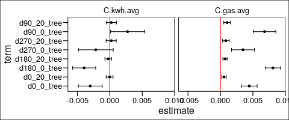
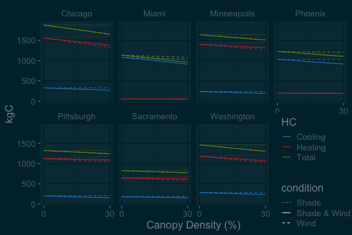

Influence of Vegetation on Energy Use of Madison WI
Table of Contents
- 1. Building Energy and Trees
- 1.1. libraries
- 1.2. functions
- 1.3. inputs
- 1.4. Load and join datasets
- 1.4.1. MGE energy use
- 1.4.2. Assessors Property
- 1.4.3. Join Energy with Assessors Property Info
- 1.4.4. parcels
- 1.4.5. Building Footprints
- 1.4.6. Mask Building Footprints to the area for which I have parcel information (city of Madison)
- 1.4.7. crop building footprints to those inside parcels
- 1.4.8. make regions around each building
- 1.4.9. fix colnames
- 1.4.10. save regions around buildings
- 1.5. read in regions around buildings
- 1.6. Urban Tree Canopy Map
- 1.7. Calculate Tree Cover within regions around each residential building
- 1.8. Join Tree cover to buildings
- 1.9. Calculate Building Cover within regions around each residential building There could be an error here which is causing me to lose some houses
- 1.10. Join Building Cover to Buildings
- 1.11. Model
- 1.12. Plot Coefficients from all models
- 1.13. plot median effect of trees maybe make this one spatial (show house in center)
- 1.14. effect on median house
- 1.15. Comparing C emissions from energy use due to trees to C stored and sequestered.
- 1.16. tree distributions
- 2. extending old papers
- 3. compare 2015-04 –2016-04 to climate normals
##+PROPERTY: header-args:R :session R:energy:krusty :cache no :results output :exports both :tangle no
1 Building Energy and Trees
1.1 libraries
library(plyr) library(ascii) library(broom) library(tidyr) library(stringr) library(raster) library(rgeos) library(rgdal) library(foreach) library(doParallel) library(ggplot2) library(dplyr) library(GGally) library(maptools)
Attaching package: ‘tidyr’
The following object is masked from ‘package:ascii’:
expand
Loading required package: sp
Attaching package: ‘raster’
The following object is masked from ‘package:tidyr’:
extract
rgeos version: 0.3-26, (SVN revision 560)
GEOS runtime version: 3.6.1-CAPI-1.10.1 r0
Linking to sp version: 1.2-5
Polygon checking: TRUE
rgdal: version: 1.2-18, (SVN revision 718)
Geospatial Data Abstraction Library extensions to R successfully loaded
Loaded GDAL runtime: GDAL 2.1.3, released 2017/20/01
Path to GDAL shared files: /Library/Frameworks/R.framework/Versions/3.4/Resources/library/rgdal/gdal
GDAL binary built with GEOS: FALSE
Loaded PROJ.4 runtime: Rel. 4.9.3, 15 August 2016, [PJ_VERSION: 493]
Path to PROJ.4 shared files: /Library/Frameworks/R.framework/Versions/3.4/Resources/library/rgdal/proj
Linking to sp version: 1.2-7
Warning message:
package ‘rgdal’ was built under R version 3.4.4
foreach: simple, scalable parallel programming from Revolution Analytics
Use Revolution R for scalability, fault tolerance and more.
http://www.revolutionanalytics.com
Loading required package: iterators
Loading required package: parallel
Attaching package: ‘dplyr’
The following objects are masked from ‘package:rgeos’:
intersect, setdiff, union
The following objects are masked from ‘package:raster’:
intersect, select, union
The following objects are masked from ‘package:plyr’:
arrange, count, desc, failwith, id, mutate, rename, summarise,
summarize
The following objects are masked from ‘package:stats’:
filter, lag
The following objects are masked from ‘package:base’:
intersect, setdiff, setequal, union
Attaching package: ‘GGally’
The following object is masked from ‘package:dplyr’:
nasa
Warning message:
package ‘GGally’ was built under R version 3.4.4
Checking rgeos availability: TRUE
1.2 functions
- Convert kWh to Carbon kg
https://www.epa.gov/sites/production/files/2015-10/documents/egrid2012_ghgoutputrates_0.pdf https://www.epa.gov/energy/emissions-generation-resource-integrated-database-egrid https://www.epa.gov/sites/production/files/2017-02/documents/egrid2014_technicalsupportdocument_v2.pdf
for electricity made in region MRO East old (2012?) 1267.5 lbs/MWh * 1kg /2.20462 lb * 1 MWh / 1000 kWh * 12 C /44 CO2 new (2016) 1668.212 * 1kg /2.20462 lb * 1 MWh / 1000 kWh * 12 C /44 CO2
#old 1267.5 / 2.20462 / 1000 *12 /44 # 2016 CperkWh2016 <- 1668.212 / 2.20462 / 1000 *12 /44 CperkWh2016
[1] 0.2063698
kWh2kgC <- function(kWh) { kWh * .2063698 }
- Convert Therm to Carbon kg
see https://www.epa.gov/energy/greenhouse-gases-equivalencies-calculator-calculations-and-references 0.1 mmbtu/1 therm × 14.46 kg C/mmbtu
.1*14.46
[1] 1.446
therm2kgC <- function(therms) { therms * 1.446 }
- define extract polygons parallel function
extract.polygons.parallel <- function(x, sp.polygons, cores) { n <- ceiling(length(sp.polygons) / cores) v <- 1:length(sp.polygons) l <- split(v, ceiling(seq_along(v)/n)) cl <- makeCluster(cores) registerDoParallel(cl) out <- foreach(i = seq_along(l), .packages = "raster") %dopar% { sp.sub <- sp.polygons[l[[i]],] raster::extract(x, sp.sub) } closeAllConnections() return(out) }
- other and make regions around polygons
options(asciiType = "org") ascii.nowarn.print <- function(x,...) { #op <- options(warn = -1) # on.exit(options(op)) suppressWarnings(print(ascii(x,...))) }
poly <- readWKT("POLYGON ((78.6 41.7, 91.3 41.7, 91.3 26.6, 78.7 26.6, 78.6 41.7))") poly <- as(poly, "SpatialPolygonsDataFrame") poly@data$BUILDINGFO = 0 poly <- build.res.primary.parcels[27940,] buffer.widths <- seq(0,51,3) out <- makeRegionsAroundPolygonManyAngles(poly, buffer.widths)
#angles are 1% different than sunrize sunset azimuth angles of solstaces # 57 # 123 makeRegionsAroundPolygonManyAngles <- function(poly) { theta = c(57,123) buffer.widths <- seq(0,60,20) bc <- gCentroid(poly) bcb <- sapply(buffer.widths, function(w) gBuffer(poly, width = w, byid = T)) bcbd <- list(gDifference(bcb[[4]], bcb[[2]]), bcb[[2]]) bcb <- do.call(bind, bcbd) theta.radians <- (theta + 90)*pi/180 # add 90 to make the 0 degrees be north r <- max(buffer.widths) + sqrt(gArea(poly)/pi) * 3 y <- r*sin(theta.radians) x <- r*cos(theta.radians) x1 <- coordinates(bc)[,1 ] + x y1 <- coordinates(bc)[,2] + y x2 <- coordinates(bc)[,1 ] - x y2 <- coordinates(bc)[,2] - y line = SpatialLines(list(Lines(list(Line(cbind(c(x1,x2),c(y1,y2)))), ID="line"))) line = SpatialLines(sapply(1:length(x1), function(i) list(Lines(Line(cbind(c(x1[i],x2[i]),c(y1[i],y2[i]))), ID=i)))) proj4string(line) <- crs(poly) o <- lapply(1:length(bcb), function(i) { lpi <- gIntersection(bcb[i,], line) blpi <- gBuffer(lpi, width = 0.001) # create a very thin polygon buffer of the intersected line dpi <- gDifference(bcb[i,], blpi) # split using gDifference disaggregate(dpi) }) o <- do.call(bind, o) dist <- gDistance(poly, o, byid = T) dist <- sapply(dist, function(d) buffer.widths[which(abs(buffer.widths - d) == min(abs(buffer.widths - d)))]) # add to the distance the difference between widths so that the distance is the cover less than a certain distance away. #It will make things make more sense later on. something like dist +3. or dist + .. something like: buffer.widths - lag(buffer.widths) direction <- sapply(1:length(o), function(i) { diff.coords <- coordinates(bc) - coordinates(gCentroid(o[i,])) atan2(diff.coords[1], diff.coords[2]) * 180/pi + 180 %% 360 # get rid of negative angles, but on 0-360 scale }) angles <- seq(0,360,90) closest.angles <- sapply(direction, function(dir) which(abs(angles - dir) == min(abs(angles - dir)))) direction <- angles[closest.angles] direction[direction >= 360] <- 0 direction <- as.character(direction) o <- SpatialPolygonsDataFrame(o, data = data.frame(BUILDINGFO = poly@data$BUILDINGFO, distance.from.building = dist, direction = direction)) o }
1.3 inputs
build.shapefile.path <- "../RD/dane_cty_building_footprint_2010/BuildingFootprint.shp" parcels.shapefile.path <- "../RD/dane_cty_parcels_2014/Dane_Parcels_2014.shp" energy.data.frame.path <- "../RD/energy.dataframe-2016-04-12-15-40-59.rds" assessors.property.path <- "../RD/Assessor_Property_Information.csv" mad.utc.path <- "../RD/madison_utc/3_ClassifiedUrbanArea.tif"
1.4 Load and join datasets
1.4.1 MGE energy use

energy <- readRDS(energy.data.frame.path)
1.4.2 Assessors Property

ass.prop <- read.csv(assessors.property.path, stringsAsFactors = F)
1.4.3 Join Energy with Assessors Property Info
ass.prop.energy <- left_join(energy, ass.prop) %>% mutate(PropertyAd = toupper(Address))
Joining, by = "Parcel"
1.4.4 parcels

parcels <- shapefile(parcels.shapefile.path)
parcels.energy <- subset(parcels, PropertyAd %in% ass.prop.energy$PropertyAd) parcels.energy@data <- left_join(parcels.energy@data, ass.prop.energy, by = c("PropertyAd"))
parcels.energy <- subset(parcels.energy, complete.cases(kWh_High) & kWh_High >0) parcels.energy@data <- parcels.energy@data %>% dplyr::select(Parcel, Address, kWh_High, kWh_Mon_Avg_last12mo, Cost_kWh_High, Cost_kWh_Avg, Therms_High, Therms_Mon_Avg_last12mo, Cost_Therms_High, Cost_Therms_Avg, Electric_for_Heating, Current.Year.Land.Value, Current.Year.Improvement.Value, Lot.Size.Sq.Ft, Water.Frontage, Elementary.School, Middle.School, High.School, Ward, State.Assembly.District, Home.Style, Year.Built, Stories, Dwelling.Units, Bedrooms, Full.Baths, Half.Baths, Fireplaces, Central.Air, First.Floor.Living.Area, Second.Floor.Living.Area, Third.Floor.Living.Area, Above.Third.Floor.Living.Area, Total.Living.Area, Finished.Attic, Finished.Basement, Total.Basement, Crawl.Space, Exterior.Wall.1, Exterior.Wall.2, Foundation, Roof, Roof.Replaced.Year, Garage.1, Garage.Stalls.1, Garage2, Garage.Stalls.2, Driveway) %>% mutate(Electric_for_Heating = factor(Electric_for_Heating), Water.Frontage = factor(Water.Frontage), Elementary.School = factor(Elementary.School), Middle.School = factor(Middle.School), High.School = factor(High.School), Ward = factor(Ward), State.Assembly.District = factor(State.Assembly.District), Home.Style = factor(Home.Style), Central.Air = factor(Central.Air), Exterior.Wall.1 = factor(Exterior.Wall.1), Exterior.Wall.2 = factor(Exterior.Wall.2), Foundation = factor(Foundation), Roof = factor(Roof), Garage.1 = factor(Garage.1), Garage2 = factor(Garage2), Driveway = factor(Driveway)) %>% mutate(Current.Year.Improvement.Value.th = as.numeric(str_replace(Current.Year.Improvement.Value,"\\$",""))/1000, Current.Year.Land.Value.th = as.numeric(str_replace(Current.Year.Land.Value,"\\$",""))/1000) %>% dplyr::select(-Current.Year.Improvement.Value, -Current.Year.Land.Value)
writeOGR(parcels.energy, dsn = "../DD/", layer = "parcels.energy.propinfo", driver = "ESRI Shapefile", overwrite = T) saveRDS(colnames(parcels.energy@data), "../DD/colnames.parcels.energy.propinfo.rds") saveRDS(parcels.energy$Parcel, "../DD/parcelID.parcels.energy.propinfo.rds")
Warning message: In writeOGR(parcels.energy, dsn = "../DD/", layer = "parcels.energy.propinfo", : Field names abbreviated for ESRI Shapefile driver
parcels.energy <- shapefile("../DD/parcels.energy.propinfo.shp") parcels.energy$Parcel <- readRDS("../DD/parcelID.parcels.energy.propinfo.rds") colnames(parcels.energy@data) <- readRDS("../DD/colnames.parcels.energy.propinfo.rds") parcels.energy <- spTransform(parcels.energy, crs("+init=epsg:32616"))
1.4.5 Building Footprints

build <- shapefile(build.shapefile.path) build.res <- subset(build, BuildingUs == "Residential") build.res.primary <- subset(build.res, BuildingCl == "Primary") build.res.primary <- spTransform(build.res.primary, crs("+init=epsg:32616")) writeOGR(build.res.primary, dsn = "../DD/", layer = "buildings_residential_primary", driver = "ESRI Shapefile")
build.res.primary <- shapefile("../DD/buildings_residential_primary.shp")
1.4.6 Mask Building Footprints to the area for which I have parcel information (city of Madison)
currently footprints cover dane county
e <- new("Extent" , xmin = 294022.535226926 , xmax = 317479.19202743 , ymin = 4763205.41481759 , ymax = 4781697.04891745 ) e.parcels.energy <- crop(parcels.energy, e) library(alphahull) library(igraph) g <- geom(e.parcels.energy) i <- sample(1:nrow(g), 20000) a <- ashape(unique(g[i,5:6]), alpha = 2000) ag = graph.edgelist(cbind(as.character(a$edges[, "ind1"]), as.character(a$edges[, "ind2"])), directed = FALSE) plot(ag) if (!is.connected(ag)) { stop("Graph not connected") } if (any(degree(ag) != 2)) { stop("Graph not circular") } if (clusters(ag)$no > 1) { stop("Graph composed of more than one circle") } cutg = ag - E(ag)[1] # find chain end points ends = names(which(degree(cutg) == 1)) path = get.shortest.paths(cutg, ends[1], ends[2])[[1]] # this is an index into the points pathX = as.numeric(V(ag)[path[[1]]]$name) # join the ends pathX = c(pathX, pathX[1]) # now show the alpha shape plot with our poly on top plot(a, lwd = 10, col = "gray") # get the points from the ashape object lines(a$x[pathX, ], lwd = 2) a.sp <- SpatialPolygonsDataFrame(SpatialPolygons(list(Polygons(list(Polygon(a$x[pathX,])),1))), data = data.frame(d = 1)) a.sp.buf <- gBuffer(a.sp, width = 100) build.res.primary.crp <- crop(build.res.primary, a.sp.buf) writeOGR(build.res.primary.crp, dsn = "../DD/", layer = "buildings_residential_primary_crp2Mad", driver = "ESRI Shapefile")
build.res.primary.crp <- shapefile("../DD/buildings_residential_primary_crp2Mad.shp")
1.4.7 crop building footprints to those inside parcels
parallel.crop <- function(sp1,sp2, cores) { a <- 1:length(sp1) a.s <- split(a, rep(1:cores,each = ceiling(length(a)/cores))) cl <- makeCluster(cores) registerDoParallel(cl) out <- foreach(i = a.s, .packages = c("sp","raster")) %dopar% { o <- crop(sp1[i,], sp2) } closeAllConnections() return(out) } out <- parallel.crop(build.res.primary.crp, parcels.energy, 40) build.res.primary.parcels <- do.call("rbind",out[sapply(out, FUN = function(o) !is.null(o))]) build.res.primary.parcels <- spTransform(build.res.primary.parcels, crs("+init=epsg:32616")) #remove the fragments of buildings o.area <- data.frame(id = build.res.primary.crp@data$BUILDINGFO, o.area = gArea(build.res.primary.crp, byid = T)) n.area <- data.frame(id = build.res.primary.parcels@data$BUILDINGFO, n.area =gArea(build.res.primary.parcels, byid = T)) compare.area <- left_join(n.area, o.area) %>% mutate(area.ratio = n.area / o.area, keep = area.ratio > .6) build.res.primary.parcels <- build.res.primary.parcels[compare.area$keep,] df <- over(build.res.primary.parcels, parcels.energy) build.res.primary.parcels@data <- cbind(build.res.primary.parcels@data, df) # If there are two buildings in a parcel, remove the smaller of the two parcels.w2buidings <- build.res.primary.parcels@data %>% group_by(Parcel) %>% summarize(n = n()) %>% filter(n > 1) %>% pull(Parcel) build.to.remove <- build.res.primary.parcels@data %>% filter(Parcel %in% parcels.w2buidings) %>% group_by(Parcel) %>% dplyr::select(BUILDINGFO, Shape_area) %>% arrange(Parcel) %>% filter(Shape_area == min(Shape_area)) %>% pull(BUILDINGFO) build.res.primary.parcels <- build.res.primary.parcels[ ! build.res.primary.parcels@data$BUILDINGFO %in% build.to.remove,] # If there are buildings that are in multiple parcels??
Warning message: In split.default(a, rep(1:cores, each = ceiling(length(a)/cores))) : data length is not a multiple of split variable Joining, by = "id" Adding missing grouping variables: `Parcel`
writeOGR(build.res.primary.parcels, dsn = "../DD/", layer = "buildings.w.parcels.energy.propinfo", driver = "ESRI Shapefile", overwrite = T) saveRDS(colnames(build.res.primary.parcels@data), "../DD/colnames.buildings.w.parcels.energy.propinfo.rds") saveRDS(build.res.primary.parcels@data$Parcel, "../DD/parcelID.buildings.w.parcels.energy.propinfo.rds") saveRDS(build.res.primary.parcels@data$BUILDINGINFO, "../DD/BUILDINGINFO.buildings.w.parcels.energy.propinfo.rds") saveRDS(build.res.primary.parcels@data, "../DD/data.buildings.w.parcels.energy.propinfo.rds")
1.4.8 make regions around each building
Note , this is an old figure. An example of an early attempt at dividing regions up. The figure in the publication shows how I ultimately divided regions.

build.res.primary.parcels <- readOGR(dsn = "../DD/", layer = "buildings.w.parcels.energy.propinfo", stringsAsFactors = F) colnames(build.res.primary.parcels@data) <- readRDS("../DD/colnames.buildings.w.parcels.energy.propinfo.rds")
fix poly 27940. It has bad topology
build.res.primary.parcels <- bind(build.res.primary.parcels, gBuffer(build.res.primary.parcels[27940,], width = .001)) build.res.primary.parcels <- build.res.primary.parcels[-27940,]
cores <- 4 chunks <- 80 a <- 1:length(build.res.primary.parcels) a.s <- split(a, rep(1:chunks,each = ceiling(length(a)/chunks))) dir.create("../DD/buildings.regions.solarangles") cl <- makeCluster(cores) registerDoParallel(cl) foreach(i = a.s, .packages = c("plyr","sp","raster","rgeos"), .combine = "rbind") %dopar% { o <- lapply(i, function(j) { print(j) op <- makeRegionsAroundPolygonManyAngles(build.res.primary.parcels[j,]) }) o <- do.call(bind, o) shapefile(o, paste0("../DD/buildings.regions.solarangles/",i[1],".shp"), overwrite = T) } closeAllConnections() shp.files <- list.files("../DD/buildings.regions.solarangles", pattern = ".*shp", full.names = T) cl <- makeCluster(cores) registerDoParallel(cl) out <- foreach(shp.file = shp.files, .packages = c("sp","raster","rgeos")) %dopar% { shapefile(shp.file) } out <- do.call(bind, out)
1.4.9 fix colnames
colnames(out@data) <- c("BUILDINGFO","distance.from.building","direction")
1.4.10 save regions around buildings
writeOGR(out, dsn = "../DD/", layer = "building.regions.solarangles", driver = "ESRI Shapefile", overwrite = T) # unlink("../DD/buildings.regions.15mNESW", recursive = T)
Warning message: In writeOGR(out, dsn = "../DD/", layer = "building.regions.solarangles", : Field names abbreviated for ESRI Shapefile driver
1.5 read in regions around buildings
out <- shapefile("../DD/building.regions.solarangles.shp") colnames(out@data) <- c("BUILDINGFO","distance.from.building","direction")
1.6 Urban Tree Canopy Map

utc <- raster(mad.utc.path)
1.7 Calculate Tree Cover within regions around each residential building
Reproject the building regions shapefile and save this transformation
out2 <- spTransform(out, proj4string(utc)) shapefile(out2,"../DD/building.regions.solarangles_utcProj.shp")
out2 <- shapefile("../DD/building.regions.solarangles_utcProj.shp") colnames(out2@data) <- c("BUILDINGFO","distance.from.building","over.building","direction")
extract the cover
cores <- 4 dir.create("../DD/extracted.cover.solarangles") chunks <- 100 a.s <- split(1:length(out2), f = rep(1:chunks, each = ceiling(length(out2)/chunks))) # chunks <- 4 # a.s <- split(1:16, f = rep(1:chunks, each = ceiling(16/chunks))) o <- lapply(a.s, function(i) { res.set <- extract.polygons.parallel(utc, out2[i,], cores = cores) res.u <- unlist(res.set, recursive = F) saveRDS(res.u, paste0("../DD/extracted.cover.solarangles/eachRegionAroundBuilding_set",i[1],".rds")) })
Warning message:
In dir.create("../DD/extracted.cover.solarangles") :
'../DD/extracted.cover.solarangles' already exists
Warning message:
In split.default(1:length(out2), f = rep(1:chunks, each = ceiling(length(out2)/chunks))) :
data length is not a multiple of split variable
summarize the cover
res.u.list <- list.files("../DD/extracted.cover.solarangles", full.names = T) #put them in the correct order for reconstruction i <- as.numeric(str_extract(res.u.list, "[0-9]+")) res.u.list <- res.u.list[order(i)] res.u <- lapply(res.u.list, readRDS) res.u.u <- unlist(res.u, recursive = F) sum.tree.per.region <- sapply(res.u.u, function(x) sum(x == 1)) n.pixels.per.region <- sapply(res.u.u, function(x) length(x)) out2@data <- cbind(out2@data, sum.tree.per.region, n.pixels.per.region) #out3 <- out2[1:16,] #out3@data <- cbind(out3@data, sum.tree.per.region, n.pixels.per.region)
1.7.1 spread to make a row for each building, rather than a row for each region
o <- out2@data %>% unite_("direction.dist", c("direction","distance.from.building")) # o <- out3@data %>% unite_("direction.dist", c("direction","distance.from.building")) # some regions, say south 10m from a house are made or more than one polygon. This combines them. #probably not necessary with these larger buffers # o <- o %>% group_by(BUILDINGFO, direction.dist.overbuilding) %>% # summarize(sum.tree.per.region = sum(sum.tree.per.region), # n.pixels.per.region = sum(n.pixels.per.region)) saveRDS(o, "../DD/sum.tree_npixels_byregion_atbuildings_solarangles.rds") o <- select(o, -n.pixels.per.region) o <- spread(o, key = direction.dist, value = sum.tree.per.region)
1.8 Join Tree cover to buildings
build.res.primary.parcels <- shapefile("../DD/buildings.w.parcels.energy.propinfo", stringsAsFactors = F) colnames(build.res.primary.parcels@data) <- readRDS("../DD/colnames.buildings.w.parcels.energy.propinfo.rds") # build.res.primary.parcels@data$BUILDINGFO <- as.numeric(build.res.primary.parcels@data$BUILDINGFO)
build.res.primary.parcels.tree <- build.res.primary.parcels[build.res.primary.parcels@data$BUILDINGFO %in% o$BUILDINGFO, ] build.res.primary.parcels.tree@data <- left_join(build.res.primary.parcels.tree@data, o)
Joining, by = "BUILDINGFO"
colnames(build.res.primary.parcels.tree@data)[57:64] <- paste0("d",colnames(build.res.primary.parcels.tree@data)[57:64],"_tree")
shapefile(as(build.res.primary.parcels.tree, "SpatialPolygons"), "../DD/buildings.w.parcels.energy.propinfo_solarangles", overwrite = T) saveRDS(colnames(build.res.primary.parcels.tree@data), "../DD/colnames.buildings.w.parcels.energy.propinfo_solarangles.rds") saveRDS(build.res.primary.parcels.tree$Parcel, "../DD/Parcel.buildings.w.parcels.energy.propinfo_solarangles.rds") saveRDS(build.res.primary.parcels.tree@data, "../DD/data_buildings.w.parcels.energy.propinfo_solarangles.rds")
1.9 Calculate Building Cover within regions around each residential building There could be an error here which is causing me to lose some houses
1.9.1 load shapefiles
library(dplyr) library(rgeos) library(rgdal) library(raster) library(doParallel) library(foreach) build.regions <- shapefile("../DD/building.regions.solarangles.shp") # Just as a note about the area size of the regions. #the near regions (just two examples: # gArea(build.regions[6,]) = 812 meters^2 # gArea(build.regions[5,]) = 540 meters^2 # the far regions ## gArea(build.regions[1,]) ## [1] 3897.304 ## > gArea(build.regions[2,]) ## [1] 2323.741 buildings <- shapefile("/Users/erker/git/energy/RD/dane_cty_building_footprint_2010/BuildingFootprint.shp") buildings <- spTransform(buildings, crs(build.regions)) # fix topology br <- gBuffer(buildings,width = .0001, byid = T) d <- buildings@data buildings <- as(br, "SpatialPolygonsDataFrame") buildings@data <- d buildings <- crop(buildings, extent(build.regions)) ## build.res.primary.parcels <- readOGR(dsn = "../DD/", layer = "buildings.w.parcels.energy.propinfo") ## colnames(build.res.primary.parcels@data) <- readRDS("../DD/colnames.buildings.w.parcels.energy.propinfo.rds") ## build.res.primary.parcels@data$Parcel <- readRDS("../DD/parcelID.buildings.w.parcels.energy.propinfo.rds") ## build.res.primary.parcels@data$BUILDINGINFO <- readRDS("../DD/BUILDINGINFO.buildings.w.parcels.energy.propinfo.rds") ## build.res.primary.parcels.reduced.data <- build.res.primary.parcels ## build.res.primary.parcels.reduced.data@data <- build.res.primary.parcels.reduced.data@data %>% dplyr::select(BUILDINGFO) # build.regions <- shapefile("../DD/building.regions.3m16angles.shp")
1.9.2 split building regions into 5000 chuncks (sent to krusty)
library(raster) library(doParallel) library(foreach) dir.create("../DD/building.regions.solar.sections") chunks <- 5000 a.s <- split(1:length(build.regions), f = rep(1:chunks, each = ceiling(length(build.regions)/chunks))) build.regions.list <- lapply(a.s, function(i) build.regions[i,]) cores <- 4 cl <- makeCluster(cores) registerDoParallel(cl) foreach(build.region = build.regions.list, .packages = c("sp","raster")) %dopar% { shapefile(build.region, paste0("../DD/building.regions.solar.sections/building.regions_subset",build.region@data$BUILDIN[1]), overwrite = T) }
1.9.3 get area of poiygons within another polygon
cores <- 4 dir.create("../DD/building.around.building.solarangles/") build.regions.list <- list.files("/Users/erker/projects/energy/DD/building.regions.solar.sections", pattern = "*.shp", full.names = T) cl <- makeCluster(cores) registerDoParallel(cl) out <- foreach(build.region.name = build.regions.list, .packages = c("plyr","dplyr","magrittr","sp","raster","rgeos"), .combine = "rbind") %dopar% { build.region <- shapefile(build.region.name) # build.region@data$region.area <- round(gArea(build.region, byid = T),2) ## in order to get build.regions.list[4702] to work... # br <- gBuffer(build.region,width = .0001, byid = T) # d <- build.region@data # build.region <- as(br, "SpatialPolygonsDataFrame") # build.region@data <- d o <- raster::intersect(build.region, buildings) if(!is.null(o)) { o@data$area <- round(gArea(o, byid = T),2) df <- left_join(build.region@data, o@data) %>% dplyr::mutate(area = ifelse(is.na(area), 0, area)) %>% ungroup() %>% # group_by(BUILDIN, dstnc__, directn, region.area) %>% group_by(BUILDIN, dstnc__, directn) %>% dplyr::summarize(area = sum(area)) } else { df <- build.region@data %>% mutate(area = 0) } saveRDS(df, paste0("../DD/building.around.building.solarangles/",build.region@data$BUILDIN[1],".rds")) df } closeAllConnections()
1.9.4 save out
res.u.list <- list.files("../DD/building.around.building.solarangles", full.names = T, pattern = ) res.u <- lapply(res.u.list, readRDS) res.u.u <- bind_rows(res.u) saveRDS(res.u.u, "../DD/building.around.building.solarangles.rds")
1.10 Join Building Cover to Buildings
buildings in regions around buildings
library(tidyr) buildings.in.regions <- readRDS("../DD/building.around.building.solarangles.rds") abuildings.in.regions <- buildings.in.regions %>% unite_("direction.dist", c("directn", "dstnc__")) buildings.in.regions <- abuildings.in.regions %>% mutate(direction.dist = paste0("d",direction.dist, "_building")) #remove trouble buildings #buildings.in.regions <- filter(buildings.in.regions, BUILDIN != 190246) # some regions, say south 10m from a house are made or more than one polygon. This combines them. # b <- b %>% group_by(BUILDIN, direction.dist.overbuilding) %>% # summarize(area = sum(area)) bs <- spread(buildings.in.regions, key = direction.dist, value = area)
prop info and tree cover in regions around buildings
buildings.propinfo.energy.tree <- shapefile("../DD/buildings.w.parcels.energy.propinfo_solarangles") buildings.propinfo.energy.tree@data <- readRDS("../DD/data_buildings.w.parcels.energy.propinfo_solarangles.rds") #remove trouble buildings #buildings.propinfo.energy.tree <- buildings.propinfo.energy.tree[which(buildings.propinfo.energy.tree@data$BUILDIN != 190246),]
Join
d <- left_join(buildings.propinfo.energy.tree@data, bs, c("BUILDINGFO" = "BUILDIN")) buildings.propinfo.energy.tree@data <- d
save
buildings.propinfo.energy.tree.building <- buildings.propinfo.energy.tree shapefile(buildings.propinfo.energy.tree.building, "../DD/buildings.w.parcels.energy.propinfo.tree.building.shp", overwrite = T) saveRDS(colnames(buildings.propinfo.energy.tree.building@data), "../DD/buildings.w.parcels.energy.propinfo.tree.building.colnames.rds") saveRDS(buildings.propinfo.energy.tree.building@data, "../DD/buildings.w.parcels.energy.propinfo.tree.building.data.rds")
1.11 Model
1.11.1 full df
df <- readRDS("../DD/buildings.w.parcels.energy.propinfo.tree.building.data.rds")
CHange "NA" Garage.1 to "none"
df$Garage.1 <- as.character(df$Garage.1) df$Garage.1[is.na(df$Garage.1)] <- "none"
Remove houses with "0" current value - missing data
df <- filter(df, Current.Year.Land.Value.th != 0)
Roof Replace Year and year built to numeric
df <- mutate(df, Roof.Replaced.Year = as.numeric(Roof.Replaced.Year),
Year.Built = as.numeric(Year.Built))
Only Gas Heating:
df <- df %>% filter(Electric_for_Heating == "No")
df <- mutate(df, kWh_High_C = kWh2kgC(kWh_High), kWh_Annual_Avg_C = kWh2kgC(12*kWh_Mon_Avg_last12mo), Therms_High_C = therm2kgC(Therms_High), Therms_Annual_Avg_C = therm2kgC(12*Therms_Mon_Avg_last12mo), C_gas_and_elec_Annual_avg = kWh_Annual_Avg_C + Therms_Annual_Avg_C, log_C_gas_and_elec_Annual_avg = log(C_gas_and_elec_Annual_avg), log_C_elec_high = log(kWh_High_C), log_C_gas_high = log(Therms_High_C), log_C_elec_Annual_avg = log(kWh_Annual_Avg_C), log_C_gas_Annual_avg = log(Therms_Annual_Avg_C), log_kWh_High = log(kWh_High), log_Therms_High = log(Therms_High), log_kWh_Annual_Avg = log(12*kWh_Mon_Avg_last12mo), log_Therms_Annual_Avg = log(12*Therms_Mon_Avg_last12mo), log_Cost_gas_and_elec_Annual_avg = log(12*(Cost_Therms_Avg + Cost_kWh_Avg))) df <- df %>% dplyr::filter(Therms_Mon_Avg_last12mo > 10, kWh_Mon_Avg_last12mo > 20)
1.11.2 PCA of building covariates
library(dplyr) pca.building.covariates <- c("Lot.Size.Sq.Ft", "Water.Frontage", "Year.Built", "Stories", "Bedrooms", "Full.Baths", "Half.Baths", "Fireplaces", "First.Floor.Living.Area", "Second.Floor.Living.Area", "Third.Floor.Living.Area", "Finished.Attic", "Finished.Basement", "Total.Basement", "Crawl.Space", "Roof.Replaced.Year", "Garage.Stalls.1", "Garage.Stalls.2", "Current.Year.Improvement.Value.th", "Current.Year.Land.Value.th") bc <- df[,pca.building.covariates] bc[is.na(bc)] <- "None" bc <- bc %>% mutate_if(is.character,as.factor) bc <- bc %>% mutate_if(is.factor,as.numeric) to.log.transform <- c("Lot.Size.Sq.Ft","First.Floor.Living.Area", "Second.Floor.Living.Area", "Third.Floor.Living.Area", "Finished.Attic", "Finished.Basement", "Total.Basement", "Crawl.Space", "Current.Year.Improvement.Value.th", "Current.Year.Land.Value.th") df[to.log.transform] <- data.frame(lapply(df[to.log.transform], as.numeric)) bc[to.log.transform] <- log(df[to.log.transform] + 1) outliers <- c(4420,28,54,74,79,4379) # make NA's a level in factor bc.o <- bc[-outliers,] pca <- prcomp(bc.o, scale. = T) #plot(pca) # biplot(pca) #cumsum((pca$sdev)^2) / sum(pca$sdev^2)
df <- df[-outliers,] df <- df[, -which(names(df) %in% pca.building.covariates)] building.pca <- data.frame(pca$x[,1:7]) colnames(building.pca) <- paste0("building.pca_",1:7) df <- bind_cols(df, building.pca)
1.11.3 remove useless variables
df <- df %>% select(-BUILDINGFO, -SOURCE, -FootprintT, -BuildingUs, -BuildingCl, -Name, -Shape_area, -Shape_len, -Parcel, -Address, -Dwelling.Units, -Above.Third.Floor.Living.Area, -Total.Living.Area)
1.11.4 remove a few more not useful covariates
covariates.to.remove <- c("Ward","State.Assembly.District","Home.Style","Above.Third.Floor.Living.Area", "Exterior.Wall.1", "Exterior.Wall.2", "Foundation","Roof", "Garage.1", "Garage2","Driveway", "Middle.School","High.School") df <- df[, -which(names(df) %in% covariates.to.remove)]
1.11.5 rescale tree and building area divide by 100
df <- df %>% mutate_at(vars(starts_with("d")), funs(./100))
It's possible to fit about 5, 100m2 trees in the near east or near west regions I created. So multiply the coefficient by 5 and that's the effect of filling the space within 20m of house with trees.
1.11.6 Fit Models
- Central Air = "true"
- kg C
- log avg kg C from gas and elec combined, all near tree regions combined
df.treecombined <- df %>% mutate(tree = rowSums(select(., contains("_0_tree")))) C.avg.lmer.log.treecombined <- lmer(log_C_gas_and_elec_Annual_avg ~ building.pca_1 + building.pca_2 + building.pca_3 + building.pca_4 + building.pca_5 + # building.pca_6 + # building.pca_7 + tree + (1|Elementary.School) , data = filter(df.treecombined, Central.Air == "true"))
ascii.nowarn.print(glance(C.avg.lmer.log.treecombined))
| | sigma | logLik | AIC | BIC | deviance | df.residual | |---+-------+----------+----------+----------+----------+-------------| | 1 | 0.30 | -5026.95 | 10071.91 | 10144.93 | 9977.51 | 24674.00 |
ascii.nowarn.print(tidy(C.avg.lmer.log.treecombined))
| | term | estimate | std.error | statistic | group | |---+----------------------------------+----------+-----------+-----------+-------------------| | 1 | (Intercept) | 7.77 | 0.01 | 878.94 | fixed | | 2 | building.pca_1 | 0.09 | 0.00 | 81.39 | fixed | | 3 | building.pca_2 | 0.01 | 0.00 | 4.85 | fixed | | 4 | building.pca_3 | 0.02 | 0.00 | 11.16 | fixed | | 5 | building.pca_4 | 0.03 | 0.00 | 14.26 | fixed | | 6 | building.pca_5 | 0.00 | 0.00 | 2.13 | fixed | | 7 | tree | 0.00 | 0.00 | 3.84 | fixed | | 8 | sd_(Intercept).Elementary.School | 0.03 | | | Elementary.School | | 9 | sd_Observation.Residual | 0.30 | | | Residual |
lower <- exp(a$estimate - 1.96 * a$std) pt <- exp(a$estimate) upper <- exp(a$estimate + 1.96 * a$std) lower pt upper (c(lower,pt,upper) - 1) * 100
[1] 1.000869 [1] 1.001776 [1] 1.002685 [1] 0.08686037 0.17764132 0.26850461
- log avg kg C from gas and elec combined
C.avg.lmer.log <- lmer(log_C_gas_and_elec_Annual_avg ~ building.pca_1 + building.pca_2 + building.pca_3 + building.pca_4 + building.pca_5 + # building.pca_6 + # building.pca_7 + d0_0_tree + d0_20_tree + d180_0_tree + d180_20_tree + d270_0_tree + d270_20_tree + d90_0_tree + d90_20_tree + ## d0_0_building + ## d0_20_building + ## d180_0_building + ## d180_20_building + ## d270_0_building + ## d270_20_building + ## d90_0_building + ## d90_20_building + (1|Elementary.School) , data = filter(df, Central.Air == "true"))
ascii.nowarn.print(glance(C.avg.lmer.log))
| | sigma | logLik | AIC | BIC | deviance | df.residual | |---+-------+----------+----------+----------+----------+-------------| | 1 | 0.30 | -5067.27 | 10166.54 | 10296.36 | 9971.51 | 24667.00 |
ascii.nowarn.print(tidy(C.avg.lmer.log))
| | term | estimate | std.error | statistic | group | |----+----------------------------------+----------+-----------+-----------+-------------------| | 1 | (Intercept) | 7.77 | 0.01 | 788.38 | fixed | | 2 | building.pca_1 | 0.09 | 0.00 | 81.30 | fixed | | 3 | building.pca_2 | 0.01 | 0.00 | 4.83 | fixed | | 4 | building.pca_3 | 0.02 | 0.00 | 10.82 | fixed | | 5 | building.pca_4 | 0.03 | 0.00 | 13.94 | fixed | | 6 | building.pca_5 | 0.00 | 0.00 | 2.02 | fixed | | 7 | d0_0_tree | 0.00 | 0.00 | 0.08 | fixed | | 8 | d0_20_tree | 0.00 | 0.00 | 0.33 | fixed | | 9 | d180_0_tree | 0.00 | 0.00 | 0.86 | fixed | | 10 | d180_20_tree | 0.00 | 0.00 | 0.45 | fixed | | 11 | d270_0_tree | 0.00 | 0.00 | 0.23 | fixed | | 12 | d270_20_tree | 0.00 | 0.00 | 0.85 | fixed | | 13 | d90_0_tree | 0.00 | 0.00 | 2.22 | fixed | | 14 | d90_20_tree | 0.00 | 0.00 | 0.80 | fixed | | 15 | sd_(Intercept).Elementary.School | 0.03 | | | Elementary.School | | 16 | sd_Observation.Residual | 0.30 | | | Residual |
- log avg kg C from gas, all near tree regions combined
df.treecombined <- df %>% mutate(tree = rowSums(select(., contains("_0_tree")))) C.gas.lmer.log.treecombined <- lmer(log_C_gas_Annual_avg ~ building.pca_1 + building.pca_2 + building.pca_3 + building.pca_4 + building.pca_5 + # building.pca_6 + # building.pca_7 + tree + (1|Elementary.School) , data = filter(df.treecombined, Central.Air == "true"))
ascii.nowarn.print(glance(C.gas.lmer.log.treecombined))
| | sigma | logLik | AIC | BIC | deviance | df.residual | |---+-------+----------+---------+---------+----------+-------------| | 1 | 0.28 | -3936.22 | 7890.43 | 7963.46 | 7795.88 | 24674.00 |
ascii.nowarn.print(tidy(C.gas.lmer.log.treecombined))
| | term | estimate | std.error | statistic | group | |---+----------------------------------+----------+-----------+-----------+-------------------| | 1 | (Intercept) | 6.76 | 0.01 | 691.89 | fixed | | 2 | building.pca_1 | 0.09 | 0.00 | 85.80 | fixed | | 3 | building.pca_2 | 0.03 | 0.00 | 17.70 | fixed | | 4 | building.pca_3 | 0.05 | 0.00 | 25.49 | fixed | | 5 | building.pca_4 | 0.04 | 0.00 | 19.55 | fixed | | 6 | building.pca_5 | 0.01 | 0.00 | 7.43 | fixed | | 7 | tree | 0.01 | 0.00 | 17.19 | fixed | | 8 | sd_(Intercept).Elementary.School | 0.04 | | | Elementary.School | | 9 | sd_Observation.Residual | 0.28 | | | Residual |
lower <- exp(a$estimate - 1.96 * a$std) pt <- exp(a$estimate) upper <- exp(a$estimate + 1.96 * a$std) lower pt upper
[1] 1.006774 [1] 1.00765 [1] 1.008525
- log avg kg C from gas
C.gas.lmer.log <- lmer(log_C_gas_Annual_avg ~ building.pca_1 + building.pca_2 + building.pca_3 + building.pca_4 + building.pca_5 + # building.pca_6 + # building.pca_7 + d0_0_tree + d0_20_tree + d180_0_tree + d180_20_tree + d270_0_tree + d270_20_tree + d90_0_tree + d90_20_tree + ## d0_0_building + ## d0_20_building + ## d180_0_building + ## d180_20_building + ## d270_0_building + ## d270_20_building + ## d90_0_building + ## d90_20_building + (1|Elementary.School) , data = filter(df, Central.Air == "true"))
ascii.nowarn.print(glance(C.gas.lmer.log))
| | sigma | logLik | AIC | BIC | deviance | df.residual | |---+-------+----------+---------+---------+----------+-------------| | 1 | 0.28 | -3963.38 | 7958.76 | 8088.58 | 7762.93 | 24667.00 |
ascii.nowarn.print(tidy(C.gas.lmer.log))
| | term | estimate | std.error | statistic | group | |----+----------------------------------+----------+-----------+-----------+-------------------| | 1 | (Intercept) | 6.74 | 0.01 | 637.21 | fixed | | 2 | building.pca_1 | 0.09 | 0.00 | 85.73 | fixed | | 3 | building.pca_2 | 0.03 | 0.00 | 17.66 | fixed | | 4 | building.pca_3 | 0.04 | 0.00 | 24.59 | fixed | | 5 | building.pca_4 | 0.04 | 0.00 | 18.73 | fixed | | 6 | building.pca_5 | 0.01 | 0.00 | 7.02 | fixed | | 7 | d0_0_tree | 0.00 | 0.00 | 3.68 | fixed | | 8 | d0_20_tree | 0.00 | 0.00 | 1.57 | fixed | | 9 | d180_0_tree | 0.01 | 0.00 | 6.92 | fixed | | 10 | d180_20_tree | 0.00 | 0.00 | 2.13 | fixed | | 11 | d270_0_tree | 0.00 | 0.00 | 1.97 | fixed | | 12 | d270_20_tree | 0.00 | 0.00 | 1.64 | fixed | | 13 | d90_0_tree | 0.01 | 0.00 | 3.92 | fixed | | 14 | d90_20_tree | 0.00 | 0.00 | 2.01 | fixed | | 15 | sd_(Intercept).Elementary.School | 0.04 | | | Elementary.School | | 16 | sd_Observation.Residual | 0.28 | | | Residual |
- log avg kg C from elec, all near tree regions combined
df.treecombined <- df %>% mutate(tree = rowSums(select(., contains("_0_tree")))) C.elec.lmer.log.treecombined <- lmer(log_C_elec_Annual_avg ~ building.pca_1 + building.pca_2 + building.pca_3 + building.pca_4 + building.pca_5 + # building.pca_6 + # building.pca_7 + tree + (1|Elementary.School) , data = filter(df.treecombined, Central.Air == "true"))
ascii.nowarn.print(glance(C.elec.lmer.log.treecombined))
| | sigma | logLik | AIC | BIC | deviance | df.residual | |---+-------+-----------+----------+----------+----------+-------------| | 1 | 0.43 | -14292.56 | 28603.11 | 28676.14 | 28514.29 | 24674.00 |
ascii.nowarn.print(tidy(C.elec.lmer.log.treecombined))
| | term | estimate | std.error | statistic | group | |---+----------------------------------+----------+-----------+-----------+-------------------| | 1 | (Intercept) | 7.28 | 0.01 | 512.23 | fixed | | 2 | building.pca_1 | 0.09 | 0.00 | 56.25 | fixed | | 3 | building.pca_2 | -0.01 | 0.00 | -2.10 | fixed | | 4 | building.pca_3 | 0.00 | 0.00 | 0.37 | fixed | | 5 | building.pca_4 | 0.02 | 0.00 | 7.46 | fixed | | 6 | building.pca_5 | -0.00 | 0.00 | -1.32 | fixed | | 7 | tree | -0.00 | 0.00 | -3.14 | fixed | | 8 | sd_(Intercept).Elementary.School | 0.06 | | | Elementary.School | | 9 | sd_Observation.Residual | 0.43 | | | Residual |
lower <- exp(a$estimate - 1.96 * a$std) pt <- exp(a$estimate) upper <- exp(a$estimate + 1.96 * a$std) (lower -1) *100 (pt -1)*100 (upper -1)*100
[1] -0.343475 [1] -0.2117033 [1] -0.07975729
- log avg kg C from elec
C.elec.lmer.log <- lmer(log_C_elec_Annual_avg ~ building.pca_1 + building.pca_2 + building.pca_3 + building.pca_4 + building.pca_5 + # building.pca_6 + # building.pca_7 + d0_0_tree + d0_20_tree + d180_0_tree + d180_20_tree + d270_0_tree + d270_20_tree + d90_0_tree + d90_20_tree + ## d0_0_building + ## d0_20_building + ## d180_0_building + ## d180_20_building + ## d270_0_building + ## d270_20_building + ## d90_0_building + ## d90_20_building + (1|Elementary.School) , data = filter(df, Central.Air == "true"))
ascii.nowarn.print(glance(C.elec.lmer.log))
| | sigma | logLik | AIC | BIC | deviance | df.residual | |---+-------+-----------+----------+----------+----------+-------------| | 1 | 0.43 | -14330.96 | 28693.93 | 28823.75 | 28509.74 | 24667.00 |
ascii.nowarn.print(tidy(C.elec.lmer.log))
| | term | estimate | std.error | statistic | group | |----+----------------------------------+----------+-----------+-----------+-------------------| | 1 | (Intercept) | 7.28 | 0.02 | 467.44 | fixed | | 2 | building.pca_1 | 0.09 | 0.00 | 56.20 | fixed | | 3 | building.pca_2 | -0.00 | 0.00 | -2.09 | fixed | | 4 | building.pca_3 | 0.00 | 0.00 | 0.36 | fixed | | 5 | building.pca_4 | 0.02 | 0.00 | 7.42 | fixed | | 6 | building.pca_5 | -0.00 | 0.00 | -1.28 | fixed | | 7 | d0_0_tree | -0.00 | 0.00 | -1.64 | fixed | | 8 | d0_20_tree | -0.00 | 0.00 | -0.07 | fixed | | 9 | d180_0_tree | -0.00 | 0.00 | -2.22 | fixed | | 10 | d180_20_tree | -0.00 | 0.00 | -0.48 | fixed | | 11 | d270_0_tree | -0.00 | 0.00 | -0.80 | fixed | | 12 | d270_20_tree | 0.00 | 0.00 | 0.27 | fixed | | 13 | d90_0_tree | 0.00 | 0.00 | 1.04 | fixed | | 14 | d90_20_tree | 0.00 | 0.00 | 0.30 | fixed | | 15 | sd_(Intercept).Elementary.School | 0.06 | | | Elementary.School | | 16 | sd_Observation.Residual | 0.43 | | | Residual |

- log avg kg C from gas and elec combined, all near tree regions combined
- kg C
1.12 Plot Coefficients from all models
b <- tidy(C.elec.lmer.log) %>% filter(grepl(".*tree",term)) %>% mutate(response = "C.kwh.avg") d <- tidy(C.gas.lmer.log) %>% filter(grepl(".*tree",term)) %>% mutate(response = "C.gas.avg") tree.coef <- bind_rows(b,d) tree.coef$facet = factor(tree.coef$response, levels = c("kwh.avg", "C.kwh.avg","therms.avg","C.gas.avg"))

a <- tidy(C.avg.lmer.log) %>% filter(grepl(".*tree",term)) %>% mutate(response = "Net C emissions") c <- tidy(C.elec.lmer.log) %>% filter(grepl(".*tree",term)) %>% mutate(response = "C from electricity") d <- tidy(C.gas.lmer.log) %>% filter(grepl(".*tree",term)) %>% mutate(response = "C from gas") from <- c("d0_0_tree", "d0_20_tree", "d180_0_tree", "d180_20_tree", "d270_0_tree", "d270_20_tree", "d90_0_tree", "d90_20_tree") to <- c("near_north", "far_north", "near_south", "far_south", "near_west", "far_west", "near_east", "far_east") cc.coef <- bind_rows(a,c,d) %>% mutate(tree_location = mapvalues(term, from = from, to = to)) %>% mutate(percent_effect = (exp(estimate) - 1)*100, xmx = (exp(estimate + std.error) - 1)*100, xmn = (exp(estimate - std.error) - 1)*100) #to get facets in correct order cc.coef$response <- factor(cc.coef$response, levels=c("C from electricity", "C from gas","Net C emissions"))
Then give the median of each response. and what the coefficients mean for a house like that. For example, for the median house that uses: XX kwh, XX therms, at coefficient of .01 means a change of
bigger houses have more effect, smaller houses less effect.
select(cc.coef, tree_location, percent_effect, response)
tree_location percent_effect response 1 near_north 0.010593438 Net C emissions 2 far_north 0.011908767 Net C emissions 3 near_south 0.105619068 Net C emissions 4 far_south 0.015631832 Net C emissions 5 near_west 0.042348737 Net C emissions 6 far_west 0.045863253 Net C emissions 7 near_east 0.403341390 Net C emissions 8 far_east 0.042440220 Net C emissions 9 near_north -0.301259281 C from electricity 10 far_north -0.003550896 C from electricity 11 near_south -0.394331136 C from electricity 12 far_south -0.024271259 C from electricity 13 near_west -0.215654401 C from electricity 14 far_west 0.021306096 C from electricity 15 near_east 0.274311399 C from electricity 16 far_east 0.023379258 C from electricity 17 near_north 0.445674445 C from gas 18 far_north 0.054805805 C from gas 19 near_south 0.812741389 C from gas 20 far_south 0.071220208 C from gas 21 near_west 0.348027756 C from gas 22 far_west 0.084072123 C from gas 23 near_east 0.682872038 C from gas 24 far_east 0.102652671 C from gas
1.13 plot median effect of trees maybe make this one spatial (show house in center)
70.4/median(exp(df$log_C_gas_and_elec_Annual_avg)) 70.4 / (median(exp(df$log_C_gas_Annual_avg) + median(exp(df$log_C_elec_Annual_avg))))
[1] 0.02899636 [1] 0.02957004
net.coef <- filter(cc.coef, response == "Net C emissions") %>% mutate(tree_median = t(tree_median), median_C = med, median_treeCover_effect_kgC = (exp(estimate * tree_median) - 1) * median_C) select(net.coef, tree_location, median_treeCover_effect_kgC) %>% ascii.nowarn.print
| treelocation | mediantreeCovereffectkgC | |
|---|---|---|
| 1 | nearnorth | 0.66 |
| 2 | farnorth | 3.56 |
| 3 | nearsouth | 6.91 |
| 4 | farsouth | 4.66 |
| 5 | nearwest | 1.36 |
| 6 | farwest | 7.95 |
| 7 | neareast | 13.02 |
| 8 | fareast | 7.31 |
poly <- readWKT("POLYGON ((78.6 41.7, 91.3 41.7, 91.3 26.6, 78.7 26.6, 78.6 41.7))") poly <- as(poly, "SpatialPolygonsDataFrame") poly@data$BUILDINGFO = 0 # poly <- build.res.primary.parcels[27940,] out <- makeRegionsAroundPolygonManyAngles(poly) out@data <- out@data %>% mutate(term = paste0("d",direction,"_",distance.from.building,"_tree"), id = 1:nrow(out@data)) med <- median(exp(df$log_C_gas_and_elec_Annual_avg)) tree_median <- select(df,contains("tree")) %>% dplyr::summarize_all(median) net.coef <- filter(cc.coef, response == "Net C emissions") %>% mutate(tree_median = t(tree_median), median_C = med, median_treeCover_effect_kgC = (exp(estimate * tree_median) - 1) * median_C) %>% select(-group) out@data <- left_join(out@data, net.coef) o.df <- ggplot2::fortify(out) o.df <- join(o.df,out@data, by = "id")
Joining, by = "term" Regions defined for each Polygons
1.14 effect on median house
1.14.1 median tree cover
tree_median <- select(df,contains("tree")) %>% dplyr::summarize_all(median)
| location | median |
|---|---|
| nearwest | 1.8 |
| nearsouth | 3.6 |
| nearnorth | 3.4 |
| neareast | 1.8 |
| farwest | 9.6 |
| farsouth | 16.5 |
| farnorth | 16.6 |
| fareast | 9.6 |
1.14.2 elec
med <- exp(median(df$log_C_elec_Annual_avg)) wMedianTree <- exp(sum(c$estimate * tree_median)) * med med wMedianTree wMedianTree - med pt <- exp(sum(c$estimate * tree_median)) lower <- exp(sum(c$estimate * tree_median) - 1.96 * sqrt(sum((c$std.error * tree_median)^2)/8)) upper <- exp(sum(c$estimate * tree_median) + 1.96 * sqrt(sum((c$std.error * tree_median)^2)/8)) ## pt <- exp(sum(c$estimate)) ## lower <- exp(sum(c$estimate) - 1.96 * sqrt(sum((c$std.error)^2)/8)) ## upper <- exp(sum(c$estimate) + 1.96 * sqrt(sum((c$std.error)^2)/8)) pt upper lower * med - med pt * med - med upper * med - med med
[1] 1426.428 [1] 1392.597 [1] -33.8315 [1] 0.9762824 [1] 0.989685 [1] -52.69042 [1] -33.8315 [1] -14.71368 [1] 1426.428
[1] 1083.793 - median annual kg C emissions from electric [1] -6.778448 - if 100m^2 tree cover added to each region, would decrease by [1] -33.47093 - if 500m^2 tree cover added to each region, would decrease by
1.14.3 gas
Assume 100m2 in each region:
med <- exp(median(df$log_C_gas_Annual_avg)) w100tree <- exp(sum(d$estimate)) * exp(median(df$log_C_gas_Annual_avg)) pt <- exp(sum(d$estimate * tree_median)) lower <- exp(sum(d$estimate * tree_median) - 1.96 * sqrt(sum((d$std.error * tree_median)^2)/8)) upper <- exp(sum(d$estimate * tree_median) + 1.96 * sqrt(sum((d$std.error * tree_median)^2)/8)) lower pt upper med lower * med - med pt * med - med upper * med - med
[1] 1.097307 [1] 1.107179 [1] 1.11714 [1] 954.36 [1] 92.86634 [1] 102.2876 [1] 111.7937
C from gas use goes up 24 kg.
if 5 100m2 trees in each region (pretty darn forested)
w500tree <- exp(sum(5*d$estimate)) * exp(median(df$log_C_gas_Annual_avg))
w500tree - med
[1] 132.2063
C from gas use goes up 127.5 kg. ish.
1.14.4 gas and elec
Using the estimates from above, just adding the separate effects together: median C is 2037 effect of 100m2 in each region is 24.2 + (-6.8) = 17.4 kg effect of 500m2 in each region is 127.5 + (-33.5) = 94 kg
median house
med <- median(exp(df$log_C_gas_and_elec_Annual_avg)) pt <- exp(sum(a$estimate * tree_median)) lower <- exp(sum(a$estimate * tree_median) - 1.96 * sqrt(sum((a$std.error * tree_median)^2)/8)) upper <- exp(sum(a$estimate * tree_median) + 1.96 * sqrt(sum((a$std.error * tree_median)^2)/8)) lower pt upper med lower * med - med pt* med - med upper * med - med (pt* med - med)/med
[1] 1.015937 [1] 1.025497 [1] 1.035148 [1] 2427.891 [1] 38.69391 [1] 61.90511 [1] 85.33472 [1] 0.02549748
These results are pretty close to the combined separate effects as one would expect
mean
tree_mean <- select(df,contains("tree")) %>% dplyr::summarize_all(mean) mn <- mean(exp(df$log_C_gas_and_elec_Annual_avg)) pt <- exp(sum(a$estimate * tree_mean)) lower <- exp(sum(a$estimate * tree_mean) - 1.96 * sqrt(sum((a$std.error * tree_mean)^2)/8)) upper <- exp(sum(a$estimate * tree_mean) + 1.96 * sqrt(sum((a$std.error * tree_mean)^2)/8)) lower * mn - mn pt* mn - mn upper * mn - mn (pt* mn - mn) / mn
[1] 42.85785 [1] 68.11191 [1] 93.60924 [1] 0.02641134
median 100m2
med <- median(exp(df$log_C_gas_and_elec_Annual_avg)) pt <- exp(sum(a$estimate)) lower <- exp(sum(a$estimate) - 1.96 * sqrt(sum((a$std.error)^2)/8)) upper <- exp(sum(a$estimate) + 1.96 * sqrt(sum((a$std.error)^2)/8)) lower pt upper med lower * med - med pt* med - med upper * med - med (pt* med - med)/med
[1] 1.004521 [1] 1.006791 [1] 1.009067 [1] 2427.891 [1] 10.97564 [1] 16.48889 [1] 22.01461 [1] 0.006791446
median 100m2 near
med <- median(exp(df$log_C_gas_and_elec_Annual_avg)) pt <- exp(sum(a$estimate[c(1,3,5,7)])) lower <- exp(sum(a$estimate[c(1,3,5,7)]) - 1.96 * sqrt(sum((a$std.error[c(1,3,5,7)])^2)/8)) upper <- exp(sum(a$estimate[c(1,3,5,7)]) + 1.96 * sqrt(sum((a$std.error[c(1,3,5,7)])^2)/8)) lower pt upper med lower * med - med pt* med - med upper * med - med (pt* med - med)/med
[1] 1.003448 [1] 1.005626 [1] 1.007809 [1] 2427.891 [1] 8.371475 [1] 13.65938 [1] 18.95877 [1] 0.005626028
neareast is 7
pt <- exp(sum(a$estimate[7])) lower <- exp(sum(a$estimate[7]) - 1.96 * sqrt(sum((a$std.error[7])^2)/8)) upper <- exp(sum(a$estimate[7]) + 1.96 * sqrt(sum((a$std.error[7])^2)/8)) med lower * med - med pt* med - med upper * med - med
[1] 2427.891 [1] 6.730497 [1] 9.79269 [1] 12.85873
nearwest is 5
pt <- exp(sum(a$estimate[5])) lower <- exp(sum(a$estimate[5]) - 1.96 * sqrt(sum((a$std.error[5])^2)/8)) upper <- exp(sum(a$estimate[5]) + 1.96 * sqrt(sum((a$std.error[5])^2)/8)) med lower * med - med pt* med - med upper * med - med
[1] 2427.891 [1] -2.075 [1] 1.028181 [1] 4.135332
1.15 Comparing C emissions from energy use due to trees to C stored and sequestered.
1.15.1 Consider a green ash tree that grows at .61 cm per year.
that growth rate is from : http://www.sciencedirect.com/science/article/pii/S0269749101002147
equations are from https://www.fs.usda.gov/rds/archive/Product/RDS-2016-0005
The coefficients of models are for 100m2 of tree canopy cover.
eqn <- read.csv("../RD/RDS-2016-0005/Data/TS6_Growth_coefficients.csv", stringsAsFactors = F) %>% mutate(a = as.numeric(a)) # uni <- eqn %>% select(Region, Scientific.Name) %>% unique # fix the coefficents in rows 143, 150, 213. see email with natalie eqn[is.na(as.numeric(eqn$a)),9:11] <- eqn[is.na(as.numeric(eqn$a)),10:12] eqn <- eqn %>% filter(Region %in% c("MidWst"), Scientific.Name == "Fraxinus pennsylvanica", Independent.variable == "cdia") eqn
Warning message:
In evalq(as.numeric(a), <environment>) : NAs introduced by coercion
Region Scientific.Name SpCode Independent.variable Predicts.component
1 MidWst Fraxinus pennsylvanica FRPE cdia dbh
Units.of.predicted.components Model.weight EqName a b c
1 meters 1/cdia^2 cub 5.37282 -0.59669 0.69285
d e Apps.min Apps.max Sigma n adj.R2 Data.min..from.raw.data.
1 -0.02238 NA 1.99 88 0.99473 46 0.912 5.8
Data.max..from.raw.data. DF
1 107.2 42
A tree that has a circular crown with an area of 100m2 would have a diameter of
cdia <- 2 * sqrt(100/pi)
cdia
[1] 11.28379
Estimate dbh of such a tree
attach(eqn) dbh <- a + b * cdia + c * cdia^2 + d * cdia^3 detach(eqn) dbh
The following objects are masked _by_ .GlobalEnv:
a, b, c, d
The following objects are masked from eqn (pos = 3):
a, adj.R2, Apps.max, Apps.min, b, c, d, Data.max..from.raw.data.,
Data.min..from.raw.data., DF, e, EqName, Independent.variable,
Model.weight, n, Predicts.component, Region, Scientific.Name,
Sigma, SpCode, Units.of.predicted.components
Error in FUN(left, right) : non-numeric argument to binary operator
[1] 54.70302
Now to calculate Volume
Equation Species,DBH lower (cm),DBH upper (cm),Equation,Predicts,DW Density,Equation Source Fraxinus pennsylvanica,15,123, = 0.0005885*dbhcm2.206,Volume,530,McHale 2007
units are m3 voly1 = volume this year voly2 = volume after a year of growth.
vol_y1 <- 0.0005885*dbh^2.206 vol_y2 <- 0.0005885*(dbh+.61)^2.206 vol_y1 vol_y2
[1] 4.016052 [1] 4.11551
Calculate above ground Dry Weight 530 kg / m3
dw1 <- vol_y1 * 530 dw2 <- vol_y2 * 530 dw1 dw2
[1] 2128.508 [1] 2181.22
pg 79 of https://www.fs.fed.us/psw/publications/documents/psw_gtr253/psw_gtr_253.pdf, shows the below ground correction to get total dry weight is to multiply above ground by 1.28
Then divide by 2 to convert dry weight into carbon.
C1 <- dw1 * 1.28 / 2 C2 <- dw2 * 1.28 /2 C1 C2 Cseq <- C2-C1 Cseq
[1] 1362.245 [1] 1395.981 [1] 33.73587
so almost 34 kg carbon are sequestered in a year by a ash tree with a canopy of 100m2.
1.16 tree distributions
2 extending old papers
2.1 extending thayer_maeda_1985
How much C emissions do these trees cause or prevent? Annual
library(dplyr) library(tidyr) data <- read.csv('../RD/thayer_maeda_table3.csv') therm.cost <- .56 kgC.perThermNaturalGas <- 1.446 # The carbon coefficient for natural gas is 1.446 kg C / therm citep:epa_a2_2017. Ctherms <- data %>% filter(Heating.Cooling == "Heating") %>% mutate(therms = Cost / therm.cost) %>% select(-Cost, Heating.Cooling) %>% group_by(City) %>% spread(Condition, therms) %>% mutate(therms_dueToTrees = Trees - NoTrees) %>% select(City, therms_dueToTrees) %>% mutate(kgC_fromTherms_dueToTrees = therms_dueToTrees * kgC.perThermNaturalGas) %>% data.frame Ctherms
City therms_dueToTrees kgC_fromTherms_dueToTrees
1 Eureka 64.26786 92.93132
2 PalmSprings 9.75000 14.09850
3 Sacramento 25.17857 36.40821
4 SantaBarbara 30.98214 44.80018
5 Truckee 68.55357 99.12846
library(dplyr) library(tidyr) kwh.cost <- 0.07 kgC.perkwh <- .1567988 #.1567988 kg C / kWh THis is from Wisconsin. Ckwh <- data %>% filter(Heating.Cooling == "Cooling") %>% mutate(kwh = Cost / kwh.cost) %>% select(-Cost, Heating.Cooling) %>% group_by(City) %>% spread(Condition, kwh) %>% mutate(kwh_dueToTrees = Trees - NoTrees) %>% select(City, kwh_dueToTrees) %>% mutate(kgC_fromKwh_dueToTrees = kwh_dueToTrees * kgC.perkwh) %>% data.frame Ckwh
City kwh_dueToTrees kgC_fromKwh_dueToTrees
1 Eureka 0.00000 0.000000
2 PalmSprings -934.42857 -146.517279
3 Sacramento -432.85714 -67.871481
4 SantaBarbara -24.42857 -3.830371
5 Truckee 0.00000 0.000000
Two figures:
- bar chart with C on y axis, City on X axis, 3 bars for each city for heating, cooling, and net.
- plot cities in HDD and CDD space, color the dot by the net C.
Ccooling <- Ckwh %>% mutate(kgC = kgC_fromKwh_dueToTrees, hc = "cooling") %>% select(-kwh_dueToTrees, -kgC_fromKwh_dueToTrees) Cheating <- Ctherms %>% mutate(kgC = kgC_fromTherms_dueToTrees, hc = "heating") %>% select(-therms_dueToTrees, -kgC_fromTherms_dueToTrees) C <- rbind(Cheating, Ccooling) %>% ungroup() %>% spread(hc, kgC) %>% mutate(net = heating + cooling) %>% gather(hc, C, -City) C
City hc C
1 Eureka cooling 0.000000
2 PalmSprings cooling -146.517279
3 Sacramento cooling -67.871481
4 SantaBarbara cooling -3.830371
5 Truckee cooling 0.000000
6 Eureka heating 92.931321
7 PalmSprings heating 14.098500
8 Sacramento heating 36.408214
9 SantaBarbara heating 44.800179
10 Truckee heating 99.128464
11 Eureka net 92.931321
12 PalmSprings net -132.418779
13 Sacramento net -31.463266
14 SantaBarbara net 40.969808
15 Truckee net 99.128464
clim <- read.csv("../RD/thayer_maeda_fig7_city_hdd_cdd.csv") clim <- left_join(filter(C, hc == "net"), clim) clim
Joining, by = "City"
City hc C HDD CDD
1 Eureka net 92.93132 4679 0
2 PalmSprings net -132.41878 1240 3681
3 Sacramento net -31.46327 2849 1159
4 SantaBarbara net 40.96981 2110 386
5 Truckee net 99.12846 8208 33
Trees can have the strongest effect in hot climates (maybe why we study those places a lot), but those aren't where most people live.
2.2 extending mcpherson_e_1988
Note that they don't try to give a full summary of the effects of trees on building energy use and note that they need to include temperature humidity etc.
Taking their data, converting to C, Madison does have a small increase, like i found
2.2.1 Libraries
library(dplyr) library(tidyr) library(ggplot2) library(zoo) library(ggthemes)
2.2.2 costs and carbon emission rates
Costs of energy in paper, pg 43
Emission Rates for each city from PowerProfiler from EPA. The 2016 excel workbook came from Johnson.Travis@epa.gov. It's also available online (2016 version will be soon) at https://www.epa.gov/energy/power-profiler. Rates provided in lbs/ mwh. I convert them below.
The assumption that they all use natural gas for heating may not reflect the reality across the country, but I think that was how the paper modeled things. for what it's worth.
therm.cost <- .6 #the price of fuel was assumed to be $0.60 per therm. kwh.cost <- .08 # Electric power prices were $0.08 per kilowatt hour. kgC.perThermNaturalGas <- 1.446 #1 lb = 0.453592 kg # 12 kg C / 44 kg CO2 lbCO2mwhTOkgCkwh <- function(lbmwh) {lbmwh * 0.453592 / 1000 * 12 / 44} City <- c("Madison", "SaltLakeCity", "Tucson", "Miami") lbCO2.perMWH <- c("Madison" = 1668.212, "SaltLakeCity" = 651.199, "Tucson" = 1043.645, "Miami" = 1011.683) kgC.perkwh <- lbCO2mwhTOkgCkwh(lbCO2.perMWH) emission.rate <- data.frame(City, kgC.perkwh)
2.2.3 Figure 3. solar irradiance.
| City | Surfaces | HC | ShadeFactor | Cost |
|---|---|---|---|---|
| Madison | all | cooling | 0 | 84 |
| Madison | all | cooling | 1 | 15 |
| Madison | all | heating | 0 | 616 |
| Madison | all | heating | 1 | 776 |
| SaltLakeCity | all | cooling | 0 | 258 |
| SaltLakeCity | all | cooling | 1 | 60 |
| SaltLakeCity | all | heating | 0 | 470 |
| SaltLakeCity | all | heating | 1 | 620 |
| Miami | all | cooling | 0 | 472 |
| Miami | all | cooling | 1 | 168 |
| Miami | all | heating | 0 | 12 |
| Miami | all | heating | 1 | 19 |
| Tucson | all | cooling | 0 | 438 |
| Tucson | all | cooling | 1 | 150 |
| Tucson | all | heating | 0 | 114 |
| Tucson | all | heating | 1 | 190 |
shade.data.tot <- shade.data %>% group_by(City, Surfaces, ShadeFactor) %>% summarize(Cost = sum(Cost)) %>% mutate(HC = "total") %>% data.frame shade.data <- rbind(shade.data, shade.data.tot)
Looking at cost in dollars, only in Madison do trees cause increase emissions. Trees increase heating costs, but the decrease in cooling costs is greater for 3 of the 4 cities. Shading from trees can cause very large large decreases in cost in hot places like Miami.
heating <- data %>% filter(HC == "heating") %>% mutate(kgC = Cost / therm.cost * kgC.perThermNaturalGas) data <- left_join(data, emission.rate) cooling <- data %>% filter(HC == "cooling") %>% mutate(kgC = Cost / kwh.cost * kgC.perkwh) sf <- expand.grid("City" = c("Madison","Tucson","SaltLakeCity","Miami"), "ShadeFactor" = seq(0,1,.1), "HC" = c("cooling", "heating"), "Surfaces" = "all") cool <- select(cooling, City, ShadeFactor, kgC) %>% rename(cooling = kgC) heat <- select(heating, City, ShadeFactor, kgC) %>% rename(heating = kgC) shade.data <- left_join(cool, heat) %>% gather(HC, kgC, -City, -ShadeFactor) %>% left_join(sf, .) %>% arrange(City, HC, ShadeFactor) %>% mutate(kgC = na.approx(kgC)) %>% data.frame shade.data.tot <- shade.data %>% group_by(City, Surfaces, ShadeFactor) %>% summarize(kgC = sum(kgC)) %>% mutate(HC = "total") %>% data.frame shade.data <- rbind(shade.data, shade.data.tot)
When cost is converted to kg C, now shading causes increase in emissions for 2 of the 4 cities. Decrease in hot climates is still larger than increase in cold climates, but less so. This is because of the different cost of Carbon in heating (gas) versus cooling (electric). See Table 1.
2.2.4 figure 4, wind
I estimated these values by looking at the figure.
| City | WCF | HC | Cost |
|---|---|---|---|
| Madison | 0 | heating | 590 |
| Madison | 1 | heating | 616 |
| SaltLakeCity | 0 | heating | 375 |
| SaltLakeCity | 1 | heating | 447 |
| Tucson | 0 | heating | 75 |
| Tucson | 1 | heating | 95 |
| Miami | 0 | heating | 10 |
| Miami | 1 | heating | 15 |
| Madison | 0 | cooling | 150 |
| Madison | .25 | cooling | 85 |
| Madison | .5 | cooling | 66 |
| Madison | .75 | cooling | 64 |
| Madison | 1 | cooling | 62 |
| SaltLakeCity | 0 | cooling | 325 |
| SaltLakeCity | .25 | cooling | 245 |
| SaltLakeCity | .5 | cooling | 217 |
| SaltLakeCity | .75 | cooling | 205 |
| SaltLakeCity | 1 | cooling | 200 |
| Tucson | 0 | cooling | 525 |
| Tucson | .25 | cooling | 433 |
| Tucson | .5 | cooling | 375 |
| Tucson | .75 | cooling | 350 |
| Tucson | 1 | cooling | 342 |
| Miami | 0 | cooling | 570 |
| Miami | .25 | cooling | 470 |
| Miami | .5 | cooling | 425 |
| Miami | .75 | cooling | 395 |
| Miami | 1 | cooling | 385 |
heating <- data %>% filter(HC == "heating") %>% mutate(kgC = Cost / therm.cost * kgC.perThermNaturalGas) data <- left_join(data, emission.rate) cooling <- data %>% filter(HC == "cooling") %>% mutate(kgC = Cost / kwh.cost * kgC.perkwh)
cool <- select(cooling, City, WCF, kgC) %>% rename(cooling = kgC) heat <- select(heating, City, WCF, kgC) %>% rename(heating = kgC) wind.data <- left_join(cool, heat) %>% mutate(heating = na.approx(heating)) %>% group_by(City, WCF) %>% gather(HC, kgC, -City, -WCF) %>% data.frame wind.data.tot <- wind.data %>% group_by(City, WCF) %>% summarize(kgC = sum(kgC)) %>% mutate(HC = "total") %>% data.frame wind.data <- rbind(wind.data, wind.data.tot)

The qualitative difference in the trend lines is mostly in Salt Lake where the maximum emissions occur with wind. This is opposite all other cities. (Though the wind effect really is pretty small in Salt Lake).
As seen in figure 3 too, the colder places emit much more than the warmer places, although the amount they spend isn't too much different.
The result is that for Madison full wind is almost the minimum now. For Salt Lake there is very little difference. This suggests that for wind, the summer effect is stronger than the winter effect for all cities.
In fig 4, where $ is y axis, full wind is higher than no wind for Madison, but this not the case for Carbon.
The key takeaway is that when C is the unit of interest (not cost) then wind reduction almost always increases emissions.
2.2.5 combine shade with wind for what they describe as tree conditions.
versus none.
No tree and .75 wind (assume buildings reduce some of the wind) compared to .25 wind, .8 shade cooling and .4 shade heating (full deciduous tree cover).
the shading was done assuming wind was .25 the wind was done assuming no shade.
shading <- shade.data %>% filter((ShadeFactor %in% c(0, .8) & HC == "cooling") | (ShadeFactor %in% c(0, .4) & HC == "heating")) %>% mutate(DeciduousTree = ShadeFactor != 0) %>% select(-ShadeFactor, -Surfaces) %>% spread(DeciduousTree, kgC) %>% mutate(shade.effect = `TRUE` -`FALSE`) %>% select(City, HC, shade.effect) winding <- wind.data %>% filter(WCF %in% c(.25, 1)) %>% spread(WCF, kgC) %>% mutate(wind.effect = `0.25` - `1`) %>% select(City, HC, wind.effect) df <- left_join(shading, winding) %>% mutate(shade_and_wind.effect = shade.effect + wind.effect) %>% gather(effect, kgC, -City, -HC)
Joining, by = c("City", "HC")
for all 4 cities:
- shading reduces cooling related emissions, increases heating related emissions, the reduction is always greater than the increase.
- The wind reduction from trees increases cooling related emissions, decreases heating related. The increase is greater than the decrease in all cities except Salt Lake.
df.sumHeatCool <- df %>% group_by(City, effect) %>% summarize(kgC = sum(kgC))
Trees overall decrease carbon emissions (according to their scenario and assumptions). For 3 of 4 cities, the shading causes a net decrease in emissions and for 3 of 4 cities, the wind reduction causes a net increase in emissions.
It's really pretty interesting in that it is complex. For the warm cities, wind reduction increases emissions and shading decreases emissions. For Madison, both shading and wind reduction increase emissions a little. For Salt Lake, both shading and wind reduction decrease emissions a little.
| $ / kgC | HC | where |
|---|---|---|
| .4149 | heating | all |
| .3876 | cooling | Miami |
| .9931 | cooling | Tucson |
| .6196 | cooling | SaltLakeCity |
| .6392 | cooling | Madison |
For every dollar of electric you buy your emitting less C than for every dollar of Gas you buy.
Becuase C is more expensive
.6 / 1.446
[1] 0.4149378
.08 / kgC.perkwh
Madison SaltLakeCity Tucson Miami 0.3876545 0.9930756 0.6196454 0.6392218
2.2.6 HDD and CDD space
| City | HDD | CDD | Wind vel. | Cloud Cover |
|---|---|---|---|---|
| Madison | 7373 | 557 | 4.4 | 5.5 |
| SaltLakeCity | 5993 | 1012 | 4.0 | 4.4 |
| Tucson | 1680 | 2822 | 3.9 | 2.4 |
| Miami | 182 | 3973 | 3.9 | 5.4 |
d <- left_join(df.sumHeatCool, clim) d <- d %>% filter(effect == "shade_and_wind.effect") %>%data.frame
Joining, by = "City"
2.3 extending huang_e_1990
1980s house
Heating is MBtu Cooling is kWh
| City | HC | Base | deltaWind30pctCvr | deltaWindAndShade30pctCvr |
|---|---|---|---|---|
| Chicago | Heating | 107.6 | -15.6 | -11.7 |
| Chicago | Cooling | 2126 | -9 | -394 |
| Miami | Heating | 3.7 | -0.4 | -0.2 |
| Miami | Cooling | 8658 | -390 | -1365 |
| Minneapolis | Heating | 97.1 | -9.5 | -5.9 |
| Minneapolis | Cooling | 1543 | 30 | -286 |
| Phoenix | Heating | 13.7 | -1.1 | -0.7 |
| Phoenix | Cooling | 7992 | -46 | -900 |
| Pittsburgh | Heating | 77.6 | -5.8 | -2.4 |
| Pittsburgh | Cooling | 1301 | 54 | -302 |
| Sacramento | Heating | 44.5 | -4.1 | -1.5 |
| Sacramento | Cooling | 2756 | 66 | -441 |
| Washington | Heating | 81.6 | -11.1 | -7.6 |
| Washington | Cooling | 3007 | -8 | -519 |
from /Users/erker/git/energy/RD/EPAeGridpowerProfiler/Powerprofilerzipcodetool2016 5118.v8.xlsx
| City | Subregion | EmissionRatelbCO2mwh |
|---|---|---|
| Chicago | RFCW | 1243.439 |
| Miami | FRCC | 1011.683 |
| Minneapolis | MROW | 1238.817 |
| Phoenix | AZNM | 1043.645 |
| Pittsburgh | RFCW | 1243.439 |
| Sacramento | CAMX | 527.862 |
| Washington | RFCE | 758.178 |
library(dplyr) library(tidyr) library(ggplot2) library(ggthemes) lbCO2mwhTOkgCkwh <- function(lbmwh) {lbmwh * 0.453592 / 1000 * 12 / 44} #er <- read.csv("../RD/huang_er.csv") er <- er %>% mutate(kgC_per_kwh = lbCO2mwhTOkgCkwh(EmissionRate_lbCO2mwh)) er
City Subregion EmissionRate_lbCO2mwh kgC_per_kwh
1 Chicago RFCW 1243.439 0.15382200
2 Miami FRCC 1011.683 0.12515218
3 Minneapolis MROW 1238.817 0.15325022
4 Phoenix AZNM 1043.645 0.12910610
5 Pittsburgh RFCW 1243.439 0.15382200
6 Sacramento CAMX 527.862 0.06530018
7 Washington RFCE 758.178 0.09379186
City Subregion EmissionRate_lbCO2mwh kgC_per_kwh
1 Chicago RFCW 1243.439 0.15382200
2 Miami FRCC 1011.683 0.12515218
3 Minneapolis MROW 1238.817 0.15325022
4 Phoenix AZNM 1043.645 0.12910610
5 Pittsburgh RFCW 1243.439 0.15382200
6 Sacramento CAMX 527.862 0.06530018
7 Washington RFCE 758.178 0.09379186
They use an old convention where MBtu is Million Btu. Otherwise it doesn't make sense. See here:https://en.wikipedia.org/wiki/British_thermal_unit#Prefixes
10 therms = 1 MMBtu (million Btus).
#data <- read.csv("../RD/huang_e_1990_tab6.csv") # 1 US therm = 9.99761000044146 MBtu therm_per_mbtu <- 10 kgC.perThermNaturalGas <- 1.446 data <- data %>% mutate(wind = Base + delta_Wind_30pctCvr, shade = Base + delta_WindAndShade_30pctCvr - delta_Wind_30pctCvr, shade_and_wind = Base + delta_WindAndShade_30pctCvr) %>% select(-delta_WindAndShade_30pctCvr, -delta_Wind_30pctCvr) %>% gather(condition, energy, -City, -HC, -Base) %>% gather(CanopyDensity, energy, -City, -HC, -condition) %>% mutate(CanopyDensity = ifelse(CanopyDensity == "Base", 0, 30)) heating <- data %>% filter(HC == "Heating") %>% mutate(kgC = energy * therm_per_mbtu * kgC.perThermNaturalGas) cooling <- data %>% filter(HC == "Cooling") cooling <- left_join(cooling, er) %>% mutate(kgC = energy * kgC_per_kwh) %>% select(-EmissionRate_lbCO2mwh, -kgC_per_kwh, -Subregion) data <- rbind(cooling, heating) %>% select(-energy) data.tot <- data %>% group_by(City, condition, CanopyDensity) %>% summarize(kgC = sum(kgC)) %>% mutate(HC = "Total") %>% data.frame data <- rbind(data, data.tot)
Joining, by = "City"
shade wind shade wind - line type
HC - color

Total effect is negative, but if the effect of wind is weaker than we think,
The effect is small: looking at the heating and cooling effects combined:
data %>% filter(HC == "Total", condition == "shade_and_wind") %>% spread(CanopyDensity, kgC) %>% mutate(kgCavoided = `30` - `0`) %>% select(City, condition, kgCavoided)
City condition kgCavoided
1 Chicago shade_and_wind -229.78787
2 Miami shade_and_wind -173.72472
3 Minneapolis shade_and_wind -129.14356
4 Phoenix shade_and_wind -126.31749
5 Pittsburgh shade_and_wind -81.15824
6 Sacramento shade_and_wind -50.48738
7 Washington shade_and_wind -158.57397
I guess chicago really is the windy city…
Just the shade effect:
data %>% filter(HC == "Total", condition == "shade") %>% spread(CanopyDensity, kgC) %>% mutate(kgCavoided = `30` - `0`) %>% select(City, condition, kgCavoided)
City condition kgCavoided
1 Chicago shade -2.827468
2 Miami shade -119.131372
3 Minneapolis shade 3.628930
4 Phoenix shade -104.472607
5 Pittsburgh shade -5.596630
6 Sacramento shade 4.488811
7 Washington shade 2.682361
shade estimated to cause an increase in C emissions in Minneapolis, Sacramento, and Washington. Kinda surprising. Very small negative effects in Pittsburgh and Chicago. Definitley within uncertainty.
Basically, only in Phoenix and Miami is shading really reducing C emissions.
2.3.1 Is the effect of wind stronger on heating than cooling? like simpson_mcpherson_1996 claim?
wind <- data %>% filter(condition == "wind", HC != "Total") %>% spread(CanopyDensity, kgC) %>% mutate(wind.effect.kgC = `30` - `0`) %>% select(City, HC, wind.effect.kgC) wind
City HC wind.effect.kgC
1 Chicago Cooling -1.3843980
2 Chicago Heating -225.5760000
3 Miami Cooling -48.8093490
4 Miami Heating -5.7840000
5 Minneapolis Cooling 4.5975067
6 Minneapolis Heating -137.3700000
7 Phoenix Cooling -5.9388805
8 Phoenix Heating -15.9060000
9 Pittsburgh Cooling 8.3063877
10 Pittsburgh Heating -83.8680000
11 Sacramento Cooling 4.3098116
12 Sacramento Heating -59.2860000
13 Washington Cooling -0.7503349
14 Washington Heating -160.5060000
2.4 extending mcpherson_simpson_99
2.4.1 Table 107, shade effects of trees in different regions using default distribution
trees increase C emissions net in : Norther Tier, North Central, mountains, Pacific Northwest, California Coast,
1950-1980 vintage, large deciduous tree. shade difference between cooling and heating
| northern tier | 0.0005 |
| north central | 0.0163 |
| mountains | 0.0051 |
| Pacific Northwest | 0.0349 |
| California Coast | 0.0044 |
nt <- 0.0373 -0.0378 nc <- 0.0352 - 0.0515 m <- 0.0503 -0.0554 pnw <- 0.0033 -0.0382 cc <- 0.0111 -0.0155 # convert to kg C from tons CO2 c(nt,nc,m,pnw,cc) * 12/44 * 1000
[1] -0.1363636 -4.4454545 -1.3909091 -9.5181818 -1.2000000
2.4.2 Table 109 - climate effects of trees, (evapotranspiration and wind)
0.21312
Region | existing cover | effect (t CO2/tree)
| Region | existing cover | effect |
|---|---|---|
| nt | 10 | 0.21312 |
| nt | 60 | 0.02416 |
| nc | 10 | 0.24252 |
| nc | 60 | 0.03392 |
| m | 10 | 0.14432 |
| m | 60 | 0.01528 |
| pnw | 10 | 0.10531 |
| pnw | 60 | 0.00927 |
| cc | 10 | 0.04350 |
| cc | 60 | 0.00454 |
library(dplyr) library(tidyr) d %>% mutate(kgc = effect * 12/44 * 1000)
Region existing.cover effect kgc 1 nt 10 0.21312 58.123636 2 nt 60 0.02416 6.589091 3 nc 10 0.24252 66.141818 4 nc 60 0.03392 9.250909 5 m 10 0.14432 39.360000 6 m 60 0.01528 4.167273 7 pnw 10 0.10531 28.720909 8 pnw 60 0.00927 2.528182 9 cc 10 0.04350 11.863636 10 cc 60 0.00454 1.238182
2.5 extending akbari_konopacki_2003,akbari_konopacki_2005
Use their data (along with their less than awesome assumptions and interpolation, see figures with poor fit), to
- plot where in the US trees are C sinks and where they are C sources according to their assumptions.
- show what percent of the U.S. population lives where trees are C sources/sinks.
they add 4 shade trees in the residential case
my beef with their methods:
- indirect effects combines albedo increase with veg cover increase. impossible to separate out the veg effect frmo their methods
- they assume trees transmit 90% of light in winter, it should be more like 70%.
- they assume a HUGE number of trees are planted (not sure if there is space for all these).
- They position trees to west an south of buildings. Given the 90% transmissivity this isn't so much a detrimint in winter, but it's certainly optimistic in summer.
- I can't figure out how they model ET; if they follow huang_e_1987 it's definitely optimistic.
- wind is ignored (not sure what this means for winter, maybe the heating penalties aren't as high?)
- they recognize that regarding indirect savings, their estimates is an upper boundary: "It is important to notice that in all our previous calculationsweassumedthatallurbansurfaceswould be modified to the levels discussed above. This provided an upper boundary for estimates of indirect saving potentials."
- "In very cold climates, the energy-savings potentials of HIR are expected to be minimal." in fact they are negative. HIR (heat island reduction)
#+ENDQUOTE
In climates with less than 1000 cooling-degree-days, the electricity savings were not significantly higher than winter heating penalties.
2.5.1 data needed
census tract centroids with HDD & CDD subregion shapefile subregion emission factors
download census tract shapefile (not centroids) https://www2.census.gov/geo/tiger/GENZ2017/shp/
i <- sprintf("%02d", 1:78) files <- paste0("cb_2017_",i,"_tract_500k.zip") lapply(files, function(file) { url <- paste0("https://www2.census.gov/geo/tiger/GENZ2017/shp/",file) destination <- paste0("~/git/energy/papers/data/census_tracts/",file) tryCatch(download.file(url, destination, method = "libcurl"), error=function(e) NULL) Sys.sleep(2) })
fs <- list.files("~/git/energy/papers/data/census_tracts/", pattern = ".*.shp$", recursive = T, full.names = T) tracts <- lapply(fs, function(f) shapefile(f))
ustracts <- do.call("rbind", tracts)
ustracts.area <- select(ustracts@data, GEOID, ALAND) %>% rename(FIPS = GEOID) %>% mutate(ALAND = as.numeric(ALAND), FIPS = as.numeric(FIPS))
downloaded
wget -O ~/git/energy/papers/data/tracts_wHDDCDD.csv https://raw.githubusercontent.com/TedwardErker/us_energy_climate_population/master/data/census_climate/tracts_wHDDCDD.csv
from : /Users/erker/git/energy/RD/EPAeGridpowerProfiler/egrid2016datametric.xlsx
| eGRID subregion acronym | eGRID subregion name | eGRID subregion annual CO2 total output emission rate (kg/MWh) |
| SUBRGN | SRNAME | SRCO2RTA |
|---|---|---|
| AKGD | ASCC Alaska Grid | 486.383 |
| AKMS | ASCC Miscellaneous | 228.216 |
| AZNM | WECC Southwest | 473.394 |
| CAMX | WECC California | 239.437 |
| ERCT | ERCOT All | 457.750 |
| FRCC | FRCC All | 458.896 |
| HIMS | HICC Miscellaneous | 522.551 |
| HIOA | HICC Oahu | 754.281 |
| MROE | MRO East | 756.696 |
| MROW | MRO West | 561.924 |
| NEWE | NPCC New England | 253.178 |
| NWPP | WECC Northwest | 295.382 |
| NYCW | NPCC NYC/Westchester | 288.402 |
| NYLI | NPCC Long Island | 534.483 |
| NYUP | NPCC Upstate NY | 133.657 |
| RFCE | RFC East | 343.907 |
| RFCM | RFC Michigan | 576.996 |
| RFCW | RFC West | 564.020 |
| RMPA | WECC Rockies | 620.415 |
| SPNO | SPP North | 640.638 |
| SPSO | SPP South | 566.238 |
| SRMV | SERC Mississippi Valley | 380.518 |
| SRMW | SERC Midwest | 731.466 |
| SRSO | SERC South | 494.137 |
| SRTV | SERC Tennessee Valley | 537.709 |
| SRVC | SERC Virginia/Carolina | 365.275 |
library(raster) tracts <- read.csv("../papers/data/tracts_wHDDCDD.csv", header = T) tracts.df <- tracts coordinates(tracts) <- ~LONGITUDE +LATITUDE subregions <- shapefile("/Users/erker/git/energy/RD/EPA_eGrid_powerProfiler/eGRID 2016 Subregions_shapefiles/eGRID2016 Subregions.shp") proj4string(tracts) <- proj4string(subregions)
+proj=longlat +datum=WGS84 +no_defs +ellps=WGS84 +towgs84=0,0,0
d <-over(tracts, subregions, df = T)
df <- cbind(tracts.df, d)
df <- left_join(df, ustracts.area)
# ef <- read.csv("/Users/erker/git/energy/code/eGrid_2016_CO2_emissionFactors.csv") library(dplyr) def <- left_join(df, ef, by = c("Subregions" = "SUBRGN"))
data from akbari_konopacki_2005 Table 6: energy use, HDD Table 7: energy use, CDD Table 8: Carbon, HDD. Table 9: Carbon, CDD.
In table 8, they do give C effect, but they assume: #+BEGINQUOTE Togeneratethesetablesweuseddataprovided by DOE’s office of Energy Information Administration (EIA, 1997). (The corresponding conversion factor for 2001 is 0.173kgC/kWh (EIA, 2003).) In 1995, the US mix of electricity generation emitted 0.167 kgC/kWh. Theestimatedcarbonemissionfromcombustionof natural gas was 1.447 kgC/therm.
I look at pre 1980 houses, because I think this is most houses. the difference is in maginitidue, not direction between pre and post 1980 houses. And a house with gas heat.
elec units are kWh/1000ft2; gas units are Therm/1000ft2 savings have a negative effect. (unlike in their table)
note that indirect include evapo trans from trees and albedo effects
| bin | hddmin | hddmax |
|---|---|---|
| 1 | 0 | 500 |
| 2 | 500 | 1000 |
| 3 | 1000 | 1500 |
| 4 | 1500 | 2000 |
| 5 | 2000 | 2500 |
| 6 | 2500 | 3000 |
| 7 | 3000 | 3500 |
| 8 | 3500 | 4000 |
| 9 | 4000 | 4500 |
| 10 | 4500 | 5000 |
| 11 | 5000 | 5500 |
| 12 | 5500 | 6000 |
| 13 | 6000 | 7000 |
| 14 | 7000 | 8000 |
| 15 | 8000 |
def <- mutate(def, bin = ifelse(hdd < 500, 1,
ifelse(hdd < 1000, 2,
ifelse(hdd < 1500, 3,
ifelse(hdd < 2000, 4,
ifelse(hdd < 2500, 5,
ifelse(hdd < 3000, 6,
ifelse(hdd < 3500, 7,
ifelse(hdd < 4000, 8,
ifelse(hdd < 4500, 9,
ifelse(hdd < 5000, 10,
ifelse(hdd < 5500, 11,
ifelse(hdd < 6000, 12,
ifelse(hdd < 6500, 13,
ifelse(hdd < 7000, 14, 15)))))))))))))))
from table 6
| bin | effect | energy | value |
|---|---|---|---|
| 1 | shade | elec | -298 |
| 1 | indirect | elec | -216 |
| 1 | shade | gas | 0 |
| 1 | indirect | gas | 0 |
| 2 | shade | elec | -291 |
| 2 | indirect | elec | -173 |
| 2 | shade | gas | 1 |
| 2 | indirect | gas | 1 |
| 3 | shade | elec | -249 |
| 3 | indirect | elec | -146 |
| 3 | shade | gas | 5 |
| 3 | indirect | gas | 2 |
| 4 | shade | elec | -293 |
| 4 | indirect | elec | -175 |
| 4 | shade | gas | 6 |
| 4 | indirect | gas | 2 |
| 5 | shade | elec | -307 |
| 5 | indirect | elec | -168 |
| 5 | shade | gas | 8 |
| 5 | indirect | gas | 3 |
| 6 | shade | elec | -282 |
| 6 | indirect | elec | -157 |
| 6 | shade | gas | 12 |
| 6 | indirect | gas | 5 |
| 7 | shade | elec | -211 |
| 7 | indirect | elec | -114 |
| 7 | shade | gas | 16 |
| 7 | indirect | gas | 6 |
| 8 | shade | elec | -250 |
| 8 | indirect | elec | -131 |
| 8 | shade | gas | 14 |
| 8 | indirect | gas | 6 |
| 9 | shade | elec | -223 |
| 9 | indirect | elec | -119 |
| 9 | shade | gas | 15 |
| 9 | indirect | gas | 7 |
| 10 | shade | elec | -181 |
| 10 | indirect | elec | -88 |
| 10 | shade | gas | 29 |
| 10 | indirect | gas | 11 |
| 11 | shade | elec | -183 |
| 11 | indirect | elec | -88 |
| 11 | shade | gas | 24 |
| 11 | indirect | gas | 10 |
| 12 | shade | elec | -185 |
| 12 | indirect | elec | -85 |
| 12 | shade | gas | 19 |
| 12 | indirect | gas | 9 |
| 13 | shade | elec | -190 |
| 13 | indirect | elec | -81 |
| 13 | shade | gas | 15 |
| 13 | indirect | gas | 8 |
| 14 | shade | elec | -168 |
| 14 | indirect | elec | -67 |
| 14 | shade | gas | 17 |
| 14 | indirect | gas | 9 |
| 15 | shade | elec | -82 |
| 15 | indirect | elec | -31 |
| 15 | shade | gas | 22 |
| 15 | indirect | gas | 11 |
#tab6 <- read.csv("/Users/erker/git/energy/code/akbari_konopacki_2005_tab6.csv") defe <- left_join(def, tab6)
kgC.perThermNaturalGas <- 1.446 CperCO2 <- 12/44 heating <- defe %>% filter(energy == "gas") %>% mutate(kgC = kgC.perThermNaturalGas * value) cooling <- defe %>% filter(energy == "elec") %>% mutate(kgC = value / 1000 * SRCO2RTA * CperCO2 ) defC <- rbind(heating, cooling)
library(tidyr) defC <- defC %>% select(-value) %>% spread(energy, kgC) %>% mutate(kgC.net = elec + gas)
Area of tracts
NET SHADE EFFECT:
indirect effect
the relationship between indirect and shade is pretty constant across regions. So a plot of total effect shows same pattern as shade and indirect separately.
library(mapproj) defC.sum <- defC %>% select(-elec, -gas) %>% spread(effect, kgC.net) %>% mutate(kgC.total.tree.effect = shade + indirect) %>% rename(lat = LATITUDE, long = LONGITUDE) defC.sum.f <- defC.sum %>% filter(long < 0, lat < 50, lat > 25) tract.cds <- select(defC.sum.f, lat, long) %>% mutate(data = "tracts") cities <- read.csv("../RD/cities_hdd_cdd.csv", stringsAsFactors = F) %>% rename(lat = latitude, long = longitude) %>% filter(long < 0, lat < 50, lat > 25) cities$city[cities$city == "Louisville/Jefferson County"] <- "Louisville" cities.cds <- cities %>% select(long,lat) %>% mutate(data = "cities") cds <- rbind(cities.cds, tract.cds) cdsp <- mapproject(cds$long,cds$lat,projection ="albers", par=c(29.5,45.5))[c("x","y")] %>% data.frame %>% mutate(data = cds$data) defC.sum.f$x <- filter(cdsp, data == "tracts")$x defC.sum.f$y <- filter(cdsp, data == "tracts")$y cities$x <- filter(cdsp, data == "cities") %>% pull(x) cities$y <- filter(cdsp, data == "cities") %>% pull(y) madison <- cities %>% filter(population == 243344 & city == "Madison") cities.exclude <- c("Milwaukee", "San Jose", "Long Beach", "Oakland", "Baltimore", "Fort Worth", "Mesa") cities <- cities %>% filter(population > 379577 & !city %in% cities.exclude) p <- ggplot(defC.sum.f, aes(x = x, y = y)) + geom_point(alpha = .2, aes(color = kgC.total.tree.effect)) + geom_point(data = cities) + geom_point(data = madison, size = 4) + geom_text(data = cities, aes(label = city),check_overlap = F, vjust = 0, nudge_y = 0.005) + geom_text(data = madison, aes(label = city),size = 8, vjust = 0, nudge_y = 0.007) + coord_equal() + scale_color_gradient2(low = "#4dac26", mid = "#f7f7f7", high = "#d01c8b", name = "Tree Effect (kg C)", guide = guide_legend( direction = "horizontal", title.position = "top", nrow = 1, override.aes = list(alpha = 1, size = 4), label.position = "bottom") #label.hjust = 0.5, #label.vjust = 1, #label.theme = element_text(angle = 90) ) + theme_void() + theme(legend.position = c(.25,.15), text = element_text(size = 18))
Net effect of Shade trees (direct effect and indirect effect) on C emissions from building energy use for 1000ft2 of roof area in a residential house. caveat: indirect effect also includes increased. albedo effect
I don't buy their results exactly, for the reasons I was saying things were so uncertain, but it notable that even with their assumptions, if applied to the US in this way it shows
defC.sum %>% mutate(trees_good = kgC.total.tree.effect < 0) %>% group_by(trees_good) %>% summarize(pop = sum(POPULATION), pop.pct = pop/ sum(.$POPULATION)) %>% data.frame()
| FALSE | 123148731 | 0.394112100404016 |
| TRUE | 185296900 | 0.593004490296801 |
| nil | 4025696 | 0.0128834092991835 |
defC.sum %>% mutate(trees_good = kgC.total.tree.effect < 0) %>% group_by(trees_good) %>% summarize(ALAND = sum(ALAND,na.rm = T), ALAND.pct = ALAND / sum(.$ALAND, na.rm = T)) %>% data.frame()
| FALSE | 5616464227894 | 0.618974755366065 |
| TRUE | 3348957343184 | 0.369079187210631 |
| nil | 108396349933 | 0.0119460574233037 |
exclude alaska
defC.sum %>% filter(lat < 50) %>% mutate(trees_good = kgC.total.tree.effect < 0) %>% group_by(trees_good) %>% summarize(ALAND = sum(ALAND,na.rm = T), ALAND.pct = ALAND / sum(.$ALAND, na.rm = T)) %>% data.frame()
| FALSE | 4277379985538 | 0.559906938810506 |
| TRUE | 3348957343184 | 0.438376871021262 |
| nil | 13110745676 | 0.0017161901682319 |
library(plotly) library(htmlwidgets) pw <- ggplotly(p) saveWidget(pw, "akbari_konopacki_2005_netC.html", selfcontained = F)
getwd()
/Users/erker/git/energy/code
3 compare 2015-04 –2016-04 to climate normals
library(ggplot2) library(dplyr) library(tidyr) library(lubridate) weather <- read.csv("/Users/erker/git/energy/RD/MadisonWeatherClimate/MadisonWeather_201504-201604.csv") %>% select(DATE, AWND, PRCP, SNOW, TAVG, TMAX, TMIN, WDF2, WSF2) %>% gather(var, value, -DATE) %>% rename(date = DATE) %>% mutate(date = ymd(date)) temp_weat <- weather %>% filter(grepl("^T.*", var)) %>% rename(temp = value) prcp_weat <- weather %>% filter(var == "PRCP") climate <- read.csv("/Users/erker/git/energy/RD/MadisonWeatherClimate/MadisonClimate_1981-2010.csv") %>% select(DATE, DLY.PRCP.25PCTL, DLY.SNOW.25PCTL, DLY.PRCP.50PCTL, DLY.SNOW.50PCTL, DLY.PRCP.75PCTL, DLY.SNOW.75PCTL, DLY.TAVG.NORMAL, DLY.DUTR.NORMAL, DLY.TMAX.NORMAL, DLY.TMIN.NORMAL, DLY.TAVG.STDDEV, DLY.DUTR.STDDEV, DLY.TMAX.STDDEV, DLY.TMIN.STDDEV) %>% gather(variable, value, -DATE) %>% separate(variable, c("freq", "var", "stat")) %>% rename(date = DATE) %>% mutate(date = ymd(date)) climate1 <- climate %>% mutate(date = date + years(5)) climate2 <- climate %>% mutate(date = date + years(6)) climate <- rbind(climate1, climate2) temp_clim <- filter(climate, grepl("^T.*", var)) %>% spread(stat, value) %>% rename(temp = NORMAL, sd = STDDEV) prcp_clim <- filter(climate, var == "PRCP") str(prcp_clim)
'data.frame': 2190 obs. of 5 variables: $ date : Date, format: "2015-01-01" "2015-01-02" ... $ freq : chr "DLY" "DLY" "DLY" "DLY" ... $ var : chr "PRCP" "PRCP" "PRCP" "PRCP" ... $ stat : chr "25PCTL" "25PCTL" "25PCTL" "25PCTL" ... $ value: num 0.05 0.05 0.05 0.05 0.05 0.05 0.05 0.05 0.05 0.05 ...

The blue geomquantile line is the 75th quantile of precip during study time. It matches pretty well with the 75th percentile of climate normals. The other percentiles don't match up too well though. I think the zero inflation is a problem. I should probably look at a cumulative distribution instead.